扉页
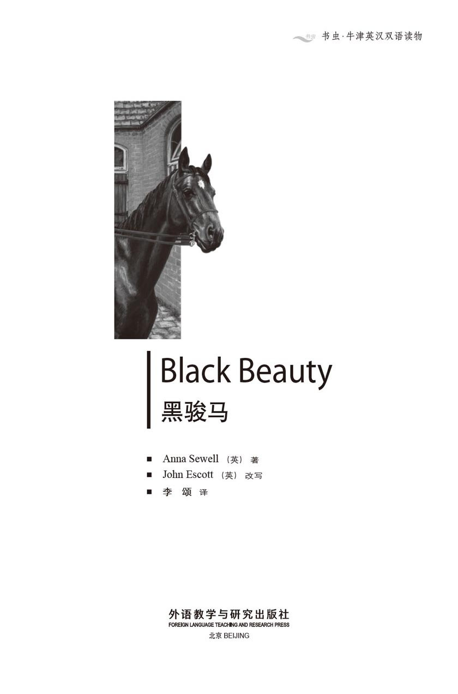
版权页
京权图字 01-97-0341
Originally published by Oxford University Press, Great Clarendon Street, Oxford. © 1995
This edition is licensed for sale in the People's Republic of China only and not for export therefrom.
'Oxford' is a registered trademark of Oxford University Press.
图书在版编目（CIP）数据
黑骏马＝Black Beauty／（英）塞维尔（Sewell, A.）著；（英）埃斯科特（Escott, J.）改写；李颂译．—北京：外语教学与研究出版社，1997.9（2014.10 重印）
（书虫·牛津英汉双语读物）
ISBN 978-7-5600-1359-6
Ⅰ．黑… Ⅱ．①塞…②埃…③李… Ⅲ．小说—英国—对照读物—英、汉 Ⅳ．H319.4：I
中国版本图书馆CIP数据核字（97）第24289号
出版人： 蔡剑峰
责任编辑：宋微微
出版发行：外语教学与研究出版社
社 址：北京市西三环北路19号（100089）
网 址：http://www.fltrp.com
版 次：1998年10月第1版
书 号：ISBN 978-7-5600-1359-6
* * *
凡侵权、盗版书籍线索，请联系我社法律事务部
举报电话：（010）88817519
电子邮箱：banquan@fltrp.com
法律顾问：立方律师事务所 刘旭东律师
中咨律师事务所 殷 斌律师
简介
简 介
“我还想要什么呢？”黑骏马描述他愉快的家和好心的主人时说，“自由！在我生命的头4年，我曾拥有那么广阔的田野，我可以在那儿全速奔驰——没有缰绳，没有嚼口，也没有眼罩。现在，除了有活儿干的时候，我得日夜呆在马厩里”。
在19世纪70年代，有很多活儿要马来干——在各种天气中，拉着各种车子穿过拥挤的城市，走过乡村的小道。
黑骏马受过良好的训练。他知道他永不能踢、咬或是逃跑，永远都得服从命令，不管多累多饿。他总是举止得体，但是当他从一个主人被卖到另一个主人，他懂得了一匹马的一生是多么艰难，某些人又是多么愚蠢和多么冷酷……
安娜·塞维尔于1820年生于诺福克，于1878年去世。出于对虐待动物的强烈不满，她写下了《黑骏马》，以说服人们对马仁慈一些。这是她身染重病的时候花了6年的时间写的，也是她写的唯一的一本书。本书出版后不久她就去世了，从那时以来这本书销售了3,000多万本。
目录
1．My first home
1
My first home
The first place I can remember well was a pleasant field with a pond of clear water in it. Trees made shadows over the pond, and water plants grew at the deep end. On one side was another field, and on the other side we looked over a gate at our master's house, which stood by the roadside. At the top of our field were more tall trees, and at the bottom was a fast-running stream.
While I was young, I lived on my mother's milk, but as soon as I was old enough to eat grass, my mother went out to work during the day and came back in the evening.
There were six other young horses in the field, although they were older than I was. We all galloped together round the field, and had great fun. But sometimes the others would kick and bite.
'They are young farm horses and haven't learned how to behave,' my mother told me. 'You are different. Your father is well known, and your grandfather twice won the most important race at Newmarket. Your grandmother was quiet and gentle, and you have never seen me kick or bite, have you? I hope you will grow up to be gentle and a willing worker, and never bite or kick.'
I have never forgotten my mother's advice. She was a clever and sensible old horse. Her name was Duchess, but our master often called her Pet. He was a good, kind man, and my mother loved him very much. Whenever she saw him at the gate, she trotted across. He used to pat her and say, 'Well, old Pet, and how is your little Darkie?' I was a dull black colour, so he called me Darkie. He sometimes brought a piece of bread for me, or a carrot for my mother, and I think we were his favourites.
When I was two years old, something happened which I have never forgotten. It was early spring, and there was a light mist over the trees and fields. I and the other young horses were feeding at the lower end of the field when we heard the distant cry of dogs.
The oldest among us lifted his head to listen. 'There are the hounds!' he said, and immediately raced off. The rest of us followed him to the top of the field, where we could see several fields beyond.
My mother and another old horse were standing near. 'They've found a hare,' said my mother, 'and if they come this way, we shall see the hunt.'
Soon the dogs were all racing down the field next to ours, making a loud 'yo-yo-yo-yo!' sound at the top of their voices. After them came men on horses, some in green coats, and all galloping as fast as they could. Suddenly, the dogs became silent and ran around with their noses to the ground.
'They've lost the smell of the hare,' said the old horse. 'Perhaps it will escape.'
But the dogs began their 'yo-yo-yo-yo!' again and came at full speed towards our field. Just then a hare, wild with fear, ran towards the trees. The dogs jumped over the stream and ran across the field, followed by the huntsmen. Six or eight jumped their horses over the stream, close behind the dogs. Before the hare could get away, the dogs were upon her with wild cries.
We heard a terrible scream, and that was the end of the hare. One of the men picked her up and held her by the leg. She was covered in blood, but all the huntsmen seemed pleased.
I was so greatly surprised that at first I did not see what was happening by the stream, but when I did look, I saw a sad sight. Two fine horses were down, one in the stream and the other on the grass. One rider, who seemed unhurt, was climbing out of the water, but the other lay quite still.
'His neck is broken,' said my mother. 'I can't understand why men are so fond of this sport. They quite often hurt themselves and ruin good horses, all for one hare that they could get more easily some other way. But we are only horses, and don't know why men do these things.'
They carried the dead rider to our master's house, and I heard afterwards that it was George Gordon, the only son of a local landowner, and a fine young man.
A man from the village came to look at the black horse on the grass. The animal was in great pain and one of his legs was broken. The man began to feel the horse all over, then he shook his head. Someone ran to our master's house and came back with a gun. Soon after, there was a loud bang and a terrible cry, then all was still. The black horse did not move again.
My mother was very unhappy. 'I've known that horse for years,' she said. 'His name was Rob Roy. He was a good brave horse.' She never went near that end of the field again.
Not many days after, we heard the church bell and saw a long, strange black carriage, pulled by black horses. They were taking the body of young George Gordon to the churchyard to bury him. He would never ride again. I never knew what they did with Rob Roy, but it was all for one little hare.
stream n. river, brook or current 河；溪；川。
gallop v. go at fast pace 飞奔；疾驰。
sensible adj. having good sense 有判断力的；敏感的。
trot v. go at a pace faster than walk 小跑。
dull adj. not clear or bright 不清楚的；晦暗的。
hound n. dog used for hunting and racing 猎犬。
race off run away at full speed 全速跑去。
hare n. fast-running animal, like but larger than rabbit 野兔。
scream n. sharp cry or cries of fear or pain 恐惧或痛苦的尖叫。
ruin v. cause the damage of or destroy 毁坏；损伤。
local adj. of a district or a place 本地的；当地的。
bang n. a sudden, loud noise 突然的巨响；砰。
carriage n. vehicle, esp. with four wheels, pulled by a horse or horses 四轮马车。
churchyard n. 教堂墓地。
bury v. put under ground 埋葬。
1 我的第一个家
1 我的第一个家
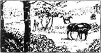
我记忆中的第一个地方是一大片美丽的田野和一个清澈的池塘。树影倒映在塘中，深水中长着水草。田野的一边连着另一片田野，从另一边越过一道门能看见主人的房子就在路边。田野高处是片高高的树林，低处是一条湍流不息的小河。
我小时候吃妈妈的奶，等我长大了，能吃草了，妈妈就白天出去干活，晚上回来。
在这片田野上还有另外6匹年轻的马，他们比我大。我们一起奔跑着穿过田野，非常好玩。不过有时他们会踢打撕咬起来。
“他们是年轻的农场马，没学过怎么举手投足，”妈妈告诉我，“你是不同的。你爸爸很有名，你的祖父曾两次在纽马克特得过最重要的赛马比赛的冠军。你的祖母又安静又温和，你也没看见过我踢人或咬人，是吧？我希望你长大以后能够性情温和、工作勤劳，永远不要踢咬。”
我从没忘记过妈妈的忠告。她是一匹聪慧、明理的老马，叫杜琪丝，不过我们主人常叫她宝贝。他是一个善良的好人，我妈妈非常爱他。每当看到他出现在门口，妈妈就快步跑过去。他常拍拍她说：“喂，老宝贝，你的小黑好吗？”我全身都是深黑色，所以他叫我小黑。有时他带给我一片面包，或是给我妈妈一根胡萝卜，我觉得我们是他的心头肉。
我两岁的时候，发生了一件我永远无法忘掉的事。那是一个初春，树林和田野都笼罩着一层薄雾。我和其他年轻的马们在田野的低地边吃草，这时我们听到远处传来狗的叫声。
我们中年纪最大的一个抬头听了听，说：“是猎犬！”然后他立刻跑了过去。我们也跟着他往高处跑，在那儿我们能看见远处的几片田野。
我妈妈和另一匹老马正站在附近。“他们发现了一只野兔，”妈妈说，“如果他们往这边来，我们就能看到这场狩猎。”
很快猎犬们向我们旁边的田野冲下来，高声地狂吠着。随后人们骑着马跑来了，有的穿着绿色外衣，全都尽力飞奔。突然，狗们静了下来，边跑边用鼻子在周围的地面上嗅。
“他们闻不着兔子的味儿了，”那匹老马说，“也许兔子能跑掉。”
但是狗们又叫开了，并全速向我们的田野冲来。这时一只野兔向树林冲来，简直吓疯了。狗们跳过小河跑过田野，猎人们紧随其后。6或8个人策马跃过小河，紧跟在狗后面。在野兔能逃走之前，狗们已经狂野地吠着扑到了她身上。
我们听到了一声可怕的尖叫，那只野兔就这么完了。一个人抓住她的腿把她拎了起来。兔子全身血淋淋的，但所有的猎人看上去都很高兴。
我吃惊地看着这一幕，没顾得上看河边的情形。可是当我望过去的时候，看到的则是一幅悲惨的景象。两匹好马倒在那里，一匹在河水里，另一匹在草地上。一个骑手正从水里往外爬，看上去没受伤，但另一个却静静地躺在地上。
“他脖子折断了，”我妈妈说，“我真不明白为什么人们如此喜爱这种游戏。他们经常伤了自己，也毁了好马，这一切就是为了一只野兔。而他们本可以很容易地以其他方式获得的。不过我们只是马，搞不懂人们为什么这样做。”
他们把死了的骑手抬到我们主人的房子里，后来我听说那是乔治·高顿，本地农场主的独生子，一个挺不错的小伙子。
一个人从村里出来看草地上的那匹黑马。那马痛得要命，一条腿断了。那人摸了摸马的全身，然后摇了摇头。有人跑回我们主人的房子，拿来了一支枪。随后是一声巨响和一声可怕的长嘶，一切便都静了下来。那匹黑马一动不动了。
我妈妈非常不高兴。“我认识那马有好几年了，”她说，“他叫罗伯·罗伊，是一匹勇敢的好马。”她从此再没靠近过那片田野。
没过几天，我们听到了教堂的钟声，还看见一辆长长的、奇怪的黑色马车，被几匹黑马拉着。他们是在把年轻的乔治·高顿的遗体运到墓地去埋掉。他永远不能再骑马了。我不知他们对罗伯·罗伊是怎么处置的，但这一切都不过是为了一只小野兔。
2．Birtwick Park
2
Birtwick Park
I was beginning to grow handsome. My coat was fine and soft, and was a shiny black. I had one white foot, and a pretty white star on my forehead. When I was four years old, Mr Gordon came to look at me. He looked closely at my eyes, my mouth, and my legs, and then I had to walk and trot and gallop for him.
'When he has been trained,' Mr Gordon said to my master, 'he will do very well.'
My master liked to train his horses himself before selling them, and the next day my training began.
To train a horse is to teach him to wear a saddle, and to carry a man, woman or child on his back. The horse must also learn to wear a collar, and to stand still when it is put on; then to have a carriage fixed behind him, and to go fast or slow, whichever his driver wishes. He must never bite or kick or talk to other horses, and must always do what his master tells him, however tired or hungry he feels.
Like all horses that have grown up, I had to wear a bit and bridle. A bit is a great piece of cold hard metal, as thick as a man's finger, which is pushed into a horse's mouth between his teeth and over his tongue, with the ends coming out at the corners. It is held there by straps which go over the horse's head, under his neck, round his nose and under his chin. Reins, which the rider holds, are fastened to each end of the bit. Slowly, with my master's kind words and gentle ways, I learned to wear my bit and bridle.
Next there was the saddle. My master put it on my back very gently, then fixed the straps under my body, speaking quietly to me all the time. Then one morning, he got on my back and rode me round the field on the soft grass. He did this every day until I was used to it. Then he took me to the village where a man fixed metal shoes on to each hoof. My feet felt heavy and strange, but I got used to this, too.
There were more new things to wear. First, a heavy collar on my neck, and a bridle with great side pieces against my eyes, called blinkers. With these on, I could only see in front of me. But in time I got used to everything, and could do my work as well as my mother.
For a fortnight, my master sent me to a neighbour's farm for another kind of training, which was very useful to me. One field was next to the railway and had sheep and cows in it, and I was put in among them. I shall never forget the first train that thundered by, and how I galloped to the far side of the field, trembling with fear at this terrible noise. But after a few days I cared as little as the sheep and cows when a train passed by.
It was early in May when a man came to take me away to Mr Gordon's house. My master said, 'Goodbye, Darkie. Be a good horse, and always do your best.' I put my nose into his hand and he patted me kindly, and then I left my first home.
* * *
Mr Gordon's house, which was called the Hall, stood in Birtwick Park, near the village. We went into the Park through a large gate, then trotted along a smooth road between some trees to the house and gardens. Beyond this were the stables.
There was room for many horses and carriages. My stable had four good stalls and a large window. It was very pleasant. The first stall was called a loose box, where a horse is not tied up all the time but is free to move around as he likes. It is a great thing to have a loose box. The groom put me into it and gave me some oats. Then he patted me, spoke kindly, and went away. In the stall next to mine stood a little fat grey pony.
'Hello,' I said. 'What is your name?'
'Merrylegs,' he said, turning round. 'I'm very handsome. I carry the young ladies on my back, and sometimes I take Mrs Gordon out in one of the carriages. Are you going to live next to me in the box?'
'Yes,' I said.
'Then I hope you are well-behaved,' he said. 'I don't like anyone who bites.'
A horse's head looked over from the stall beyond. It was a tall brown mare, and she did not look pleased. 'So it's you who has turned me out of my box,' she said.
'I'm sorry,' I said, 'but the man put me in here, so it is not my fault. I don't want to argue with anyone; I just wish to live in peace.'
Later, Merrylegs told me about the tall brown mare.
'Ginger has a bad habit of biting people,' he explained. 'One day, she bit James in the arm, and Miss Flora and Miss Jessie, the children, were afraid to come into the stable after that. If you don't bite, I hope they'll start to come again.'
I told him I never bit anything except grass and could not understand why Ginger bit people.
'No one was ever kind to her before she came here,' said Merrylegs. 'John and James do all they can to please her, and our master is never unkind. I'm twelve years old, and I know that there isn't a better place for a horse all round the country than this. John has been here fourteen years and is the best groom there ever was. And you never saw a kinder stableboy than James. There was no reason for Ginger to bite anyone. It's her own fault that she did not stay in the box.'
The name of the groom was John Manly. The next morning, he got out his brushes and gave me a good grooming, then put a saddle on me. He rode me slowly at first, then at a trot, then at a gallop. As we came back through the Park, we met Mr and Mrs Gordon. They stopped and John jumped off.
'Well, John, how does he go?' said Mr Gordon.
'He's a fine horse, sir,' said John. 'He's fast, but the lightest touch of the rein will guide him. They were shooting birds near Highwood, and a gun went off close by. He pulled up a little, but I just held the rein and he wasn't frightened at all. It's my opinion he was never frightened or beaten when he was young.'
'Good,' said Mr Gordon. 'I'll ride him tomorrow.'
I remembered my mother's advice, and the next day I tried to do exactly what my master wanted me to do. He was a very good rider, and when he came home his wife was waiting for him at the door.
'How do you like him, my dear?' she asked.
'I have never ridden a more pleasant horse,' answered Mr Gordon. 'What shall we call him?'
'What about Blackbird, like your uncle's old horse?' said his wife.
'He's far handsomer than Blackbird,' said Mr Gordon.
'Yes,' she said, 'he's quite a beauty, and he has a kind, intelligent face. Shall we call him Black Beauty?'
'Black Beauty—why, yes, I think that's a very good name,' said Mr Gordon.
John went into the stable and told James.
'I'd call him Rob Roy,' said James, 'if it did not remind everyone of the past. I never saw two horses more alike.'
'That's not surprising,' said John. 'Didn't you know that Farmer Grey's old Duchess was the mother of them both?'
So poor Rob Roy who was killed at the hunt was my brother! Now I understood why my mother was so unhappy when he died.
John was very proud of me, and seemed to know just how a horse feels. And James was kind, too.
A day or two later, I went out in the carriage with Ginger. I wondered how we would get on together, but I found it easy to trot along beside her.
Merrylegs was a happy little pony and was everyone's favourite. We were soon great friends and I became quite happy in my new home.
handsome adj. of fine appearance; good-looking 英俊的；漂亮的。
saddle n. leather seat for rider on horse 马鞍。
collar n. band of leather, esp. put round the neck of a dog, horse or other animals 项圈，（马的）轭具。
bit n. mouth-piece forming part of a horse's bridle （马的）口衔；嚼子。
bridle n. the part of a horse's harness that goes on head 马笼头。
tongue n. 舌，舌头。
strap n. strip of leather or flexible material to fasten things together 带；皮带；束紧带。
rein n. long narrow strap fastened to a bit of bridle 缰绳。
hoof n. horny part of foot of horse, ox, etc. 蹄。
blinkers n. leather squares to prevent a horse from seeing sideways 马眼罩。
fortnight n. period of two weeks 两星期。
thunder v. make a loud, terrible noise 发出雷鸣般的响声。
pat v. tap gently with a hand 轻拍。
stable n. building for lodging and feeding horses 马厩。
stall n. compartment in stable or shed 畜舍的一间。
groom n. person in charge of horses 马夫。
oats n. a kind of grain from hardy cereal plant for horses （供马食用的）燕麦。
pony n. horse of small breed 小马；驹。
mare n. female horse. 母马。
argue (with) v. quarrel 争吵。
stableboy n. boy employed in stable 马童。
fault n. 错误。
groom v. feed, brush, etc., look after (horses) 照料（马）。
go off explode （枪）响起，被发射。
pull up stop 停下。
intelligent adj. clever, quick of mind 聪敏。
remind v. make (person) think of 提醒。
alike adj. similar, like one another 相似的；同样的。
favourite n. things (or people) preferred above all others 最喜爱的东西（或人）。
2 伯特威克庄园
2 伯特威克庄园
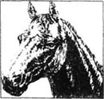
我开始长得英俊了。我的毛细腻柔软，油黑油黑的，有一只脚是白色的，前额上还有一颗漂亮的白星。在我4岁时，高顿先生来看我。他仔细地看了我的眼睛、嘴巴和腿，然后我为他表演了走步、小跑和奔驰。
“把他训练一下，”高顿先生对我的主人说，“他会做得很好。”
我的主人喜欢在卖马前亲自驯马，于是第二天我的训练开始了。
训练一匹马，要教他学会配戴马鞍，驮男人、女人和小孩。这匹马还得学会戴轭具，在套轭具时，得站稳了不能移动；然后还得学会在身后套上一辆马车，按赶车人的意思快走或慢走。他永远不得踢、咬或者和其他马闲聊，而且不管多累多饿，都必须永远服从主人。
和所有成年的马一样，我得戴上嚼口和笼头。马嚼口是一大片又冷又硬的金属，像人的手指那么厚，塞进马嘴，卡在上下两排牙齿之间，舌头之上，末端从嘴角伸出来。勒住嚼口的绳子绕着马头，经过脖子下面，围着鼻子和下巴颏儿。马夫手里的缰绳紧紧系住嚼口的两端。慢慢地，在我主人的好言好语和温柔的动作引导下，我学会了戴嚼口和笼头。
下一步是戴马鞍。主人非常轻柔地把它放到我的背上，把绳子在我的肚皮下系住。他一直轻轻地跟我说着话。然后一天早上，他骑上我在软软的草上绕着田野走了走。他每天都这样，直到我习惯了为止。然后他带我到村里的一个人那儿，给我的每只脚都钉上了掌。我的脚觉得又沉又怪，不过后来我连这个也习惯了。
还有好多新东西要戴。首先，是脖子上重重的轭具，还有笼头，带着一大块挡住我的眼睛的叫作马眼罩的东西。戴上它们，我只能看见我前方的东西。但渐渐地我适应了这一切，而且能把活儿干得和妈妈一样好了。
有两周的时间，主人把我送到邻居的农场里进行另一项训练，这对我非常有用。这是一片靠近铁路的田野，有羊，有牛，我被放到他们中间。我永远忘不了当第一辆火车轰鸣而过的时候，我是如何害怕得浑身颤抖，如何飞也似地逃得远远的。不过几天以后，再有火车过时，我已和那些牛羊一样若无其事了。
5月初，一个男人来带我去高顿先生家。我主人说：“再见了，小黑，做一匹好马，永远全力而为。”我把鼻子放在他手里，他亲切地拍了拍我，然后我就离开了我的第一个家。
* * *
高顿先生的房子叫作大宅，就在村子附近的伯特威克庄园。我们穿过一个大门走进去，小跑着经过一条平坦的通向房子和花园的林间路，尽头是一排马厩。
这里很大，能容得下很多马匹和马车。我的马厩分成挺像样的4个栏，还有一扇大窗。真体面。第一栏叫作“放饲马房”，在这儿马不拴着，想怎么走动都可以。有这么一个自由的空间真是太好了。马夫牵我进屋，喂了我一些燕麦。然后他拍拍我，温和地说了几句就走了。在我隔壁是一匹胖乎乎的小灰马。
“你好，”我说，“你叫什么名字？”
“乐腿儿，”他说着转过身来，“我很漂亮。我驮着小姐们，有时还拉车带高顿夫人出去。你要住在我隔壁吗？”
“是的。”我说。
“那我希望你举止得体，”他说，“我不喜欢爱咬人的马。”
一匹马的头从那边的栏里探出来，那是一匹高高的棕色母马。她看上去不太高兴。“这么说就是你把我从我的栏里赶出来的了。”她说。
“对不起，”我说，“但是是那个人把我放在这儿的，这可不是我的错。我不想和谁吵架，只想平平安安地过日子。”
后来，乐腿儿给我讲了高个儿棕色母马的事情。
“金儿有个坏毛病，就是爱咬人，”他说，“一天，她咬了詹姆斯的胳膊，后来弗劳拉小姐、洁茜小姐和其他孩子就不敢到马厩来了。如果你不咬，我希望他们会再来。”
我告诉他我除了青草以外，什么都不咬，也想不透金儿为什么咬人。
“她来这儿之前没人对她好过，”乐腿儿说，“约翰和詹姆斯想尽办法逗她乐，我们主人也从没有对她不好。我12岁了，我可知道对一匹马来说，附近再没一个地方比这儿更好了。约翰在这儿14年了，是有史以来最棒的马夫。詹姆斯呢，你也找不到比他更好的马童了。金儿没有理由咬任何人。她不能呆在马厩里，这是她的错。”
马夫叫约翰·曼利。第二天早上，他用刷子把我好好刷洗了一通，然后给我备上了鞍。他起先骑上我慢慢地走，然后是小跑，再后是飞奔。我们穿过庄园回来时，碰上了高顿先生和太太。他们停住脚，约翰跳了下来。
“啊，约翰，他怎么样？”高顿先生说。
“先生，他是匹好马。”约翰说，“他速度很快，轻轻地一碰缰绳就知道往哪儿走。有人在树林附近打鸟，有一枪就响在旁边，他吓了一小跳，可是我只管抓着缰绳，他就一点儿也不怕了。我觉得他小时候可能从没受过惊吓，也没挨过打。”
“好啊，”高顿先生说，“我明天骑骑他。”
我还记着妈妈的话，第二天我努力按主人的意思做。他是个非常好的骑手。他回家时，他的太太在门口等着他。
“亲爱的，你觉得他怎么样？”她问。
“我还从没骑过这么让人喜欢的马呢，”高顿先生说，“我们叫他什么名字呢？”
“就跟你叔叔以前的那匹一样，叫黑鸟怎么样？”他太太问。
“他可比黑鸟漂亮多了。”高顿先生说。
“是啊，”她说，“他真美，他有一张善良、聪明的脸。我们叫他黑骏马怎么样？”
“黑骏马——咦，对呀，我觉得这是个非常好的名字。”高顿先生说。
约翰走进马厩把这一切告诉了詹姆斯。
“我愿意叫他罗伯·罗伊，”詹姆斯说，“要是这不会让人想起过去那段事的话。我从没见过两匹马这么相像过。”
“那不奇怪，”约翰说，“你不知道这两匹马的妈妈都是农夫格雷的老杜琪丝吗？”
原来，在那场狩猎中死去的可怜的罗伯·罗伊是我哥哥！现在我明白了为什么他死时我妈妈那么不高兴了。
约翰十分以我为荣，而且好像知道马的心思。詹姆斯也很好。
一两天后，我和金儿一起拉车出去。我开始还担心我们能不能相处得好，后来发现和她一起小跑还是挺自在的。
乐腿儿是一匹乐呵呵的小马驹，也是大家的宝贝。我们很快成了好朋友，我在新家里逐渐开心起来。
3．Ginger's story
3
Ginger's story
What more could I want? Freedom! For the first four years of my life I had a large field where I could gallop around at full speed—with no straps, no bit, and no blinkers. Now I stood in a stable, night and day, except when I was wanted for work, and sometimes when John took me out, I felt so strong, so full of life, that I wanted to jump or dance.
'Calm down, boy!' he would say.
Then, as soon as we were out of the village, he would let me trot fast for a few miles. Some grooms punished a horse for getting too excited, but not John. He knew how to control me with only the sound of his voice, and I was very fond of him.
Sometimes we did have our freedom in the field for an hour or two. This was on fine Sundays in the summer, because the carriage never went out on Sundays. It was wonderful. The grass was cool and soft to our feet, and the air was so sweet. And we could gallop or lie down or roll over on our backs, or do what we liked.
One day Ginger asked me about my old home and my training. When I finished telling her, she said, 'Life has been different for me. I was taken from my mother when I was young, and there was no kind master like yours to look after me. I had a bad time when I was trained. Several men caught me in a corner of the field and one held my nose so hard that I could only just breathe. Then another pulled my mouth open to put the bit in, and I was pulled along and beaten from behind. They didn't give me a chance to understand what they wanted.
'The old master, Mr Ryder, knew about horses, but he gave up most of the business to his son, who was tall and strong, but not gentle. They called him Samson, and he said that no horse could throw him out of the saddle. One day, he made me run round the field on a long rein until I was very tired and miserable. The next morning he did the same again, then he put a saddle and bridle on me, and a new kind of bit into my mouth.
'The new bit was very painful and I pulled away and stood up on my back legs, which made him very angry. He stayed in the saddle and beat me with a whip, but after a long and terrible battle I threw him off and galloped to the other end of the field.
'I watched him go into the stable, but no one came to fetch me. Time went on and the sun was very hot. I was hungry and very thirsty. At last, just as the sun was going down, the old master came out with some oats. He spoke kindly and held out the oats for me to eat, then patted me gently and looked at the blood on my sides where Samson had whipped me.
'"Poor girl!" he said, then led me to the stable. Samson was there. "Keep out of the way," said the master. "You've done a bad day's work for this horse with your bad temper. A bad-tempered man will never make a good-tempered horse." He led me into my box and took off my saddle and bridle. Then he called for some warm water and gently cleaned the blood from my sides.
'After that, he often came to see me, but a man called Joe went on training me. He was quiet and thoughtful and I soon learned what he wanted.
'After my training,' Ginger went on, 'I was bought by a dealer to match another horse of my colour. But then we were sold to a man in London who drove us with a bearing rein—a rein to hold our heads up unnaturally high and to keep them there, for hours and hours, until the pain was terrible. We had to wear two bits instead of one, and mine was so sharp that it made my mouth bleed. Sometimes we waited for hours while our master or mistress was at parties or the theatre, and if we weren't patient, the driver would whip us.'
'Didn't your master care about you at all?' I said.
'Only about how we looked,' replied Ginger. 'He knew very little about horses. The driver told him I had a bad temper but would soon get used to the bearing rein. I was willing to work and learn, but they were so cruel that it made me angry. Then I broke away from the carriage one day, and that was the end of that place.
'I was sold to another man, but he had a groom as bad-tempered as Samson. He hit me across the legs with his stable brush if I didn't move quickly. I hated him, and one day when he made me angry, I bit him! He never came into my stall after that, and I was soon sold again.
'A dealer heard of me and said he thought he knew one place where I should do well. "It's wrong for a fine horse to go bad like that," he said. And I was brought here, not long before you came. Of course, it's very different here. But who knows how long it will last? I've decided that all men are my natural enemies.'
I was sorry for Ginger, but as the weeks went on, she became happier and more gentle.
'I do believe Ginger is getting quite fond of me,' James said one day.
'She'll be as good as Black Beauty one day,' replied John. 'Kindness is all she needs, poor thing!'
freedom n. condition of being free 自由；无拘束。
be fond of like 喜爱；喜欢。
roll v. move along by turning over and over 滚动。
miserable adj. wretched, very unhappy 可怜的；悲惨的。
whip v. 鞭打。
temper n. condition of mind and emotions 心情，脾气。
bad-tempered adj. 脾气坏的。
thoughtful adj. considerate 体贴的；周到的。
bearing-rein a fixed rein from bit to saddle that forces a horse to arch his neck 迫使马昂起头来的马缰。
cruel adj. ready to give pain to others 残忍的。
last v. continue 持续。
3 金儿的故事
3 金儿的故事
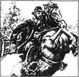
我还想要什么呢？自由！在我生命的头4年，我曾拥有那么广阔的田野，我可以在那儿全速奔驰——没有缰绳，没有嚼口，也没有眼罩。现在，除了有活儿干的时候，我得日夜呆在马厩里，有时约翰带我出去的时候，我觉得自己是那么强壮有力，充满生机，我按捺不住地想跳跃，想舞蹈。
“静一点儿，伙计！”他会说。
我们一出村，他就会让我撒开了跑上几里。有的马夫会惩罚过度兴奋的马，约翰不。他知道怎么能只用声音来控制我，我真喜欢他。
有时在田野里，我们可以尽情享受一两个小时的自由。这时往往是在夏天的周日，因为马车在周日不外出。那真叫妙不可言。青草踏上去凉爽而柔软，连空气都是甜的。我们可以或飞跑或卧倒或是滚来滚去，随心所欲。
一天金儿问起我的老家和我受的训练。我讲完后，她说：“过去我的生活可不是这样。我小时候就被人从我妈妈身边带走，可没有像你的主人那么好的人照顾我。训练时我可受了罪了。几个人在草场的一角捉住我，一个人紧紧地抓住我的鼻子，我都快透不过气来了。另一个掰开我的嘴，塞进嚼子，我一路被拖着，屁股被抽打着。他们不给我时间弄明白他们到底想要我干什么。
“老主人莱德先生倒是懂得马匹，但他已把绝大部分工作转给了他的儿子，那是个又高又壮、又不和气的家伙。他们叫他萨姆森，他说没有哪匹马能把他甩下马鞍。一天，他用长鞭子赶着我绕着田野跑啊跑，直到我精疲力尽。第二天他又这样来了一遍，还给我备上马鞍，绑上笼头，而且还给我嘴里塞进了一种新式嚼口。
“新嚼口让我的嘴很疼，我挣脱开去，用后腿直立起来，这可惹恼了他。他仍坐在马鞍上，用鞭子抽我，经过一番长时间的激烈较量，我终于把他甩了下来，跑到田野的另一边去了。
“我看着他走进马厩，但是没人来把我领回去。时间一分一秒地过着，太阳变得火热。我好饿，还渴得要命。最后，到太阳快落山的时候，老主人带着一些燕麦出来了。他对我和气地讲话，又捧出燕麦来喂我，还轻轻地拍着我，察看了我身上被萨姆森抽打出的鲜血。
“‘可怜的姑娘！’他说着，牵我回了马厩。萨姆森也在那儿。‘滚出去，’老主人说，‘你的臭脾气让这匹马受了一天的罪。一个坏脾气的人永远训练不出好脾气的马。’他带我进了我的圈栏，卸下了我的马鞍和笼头。然后他叫人送来了温水，轻轻地为我擦拭身上的血。
“从那以后，他常来看我，一个叫乔的人继续训练我。他又安静又周到，我很快就能领会他的意图。
“训练之后，”金儿继续道，“我被一个商人买去配他的另一匹颜色和我相仿的马。随后我们被卖到伦敦。新主人用缰绳把我们的头勒得老是不自然地高昂着，一连好几个小时，直到我们痛得受不了。我们得戴两副嚼子，而不是一副，我的嚼口锋利得把我的嘴都划出血了。有时我们的男主人或女主人参加舞会或去剧院，我们得等上好多个小时，如有一点不耐烦，马夫就抽我们。”
“你们的主人就一点也不关心你们？”我说。
“他只在乎我们的外貌。”金儿说，“他对马懂得很少。马夫告诉他说我的脾气很坏，但很快就会适应缰绳。我愿意干活和学新本领，但他们太冷酷了，我就生气了。于是一天我从那辆车上挣脱开逃走了，从此告别了那个地方。
“我被卖给了另一个人，他有一个脾气和萨姆森一样坏的马夫。如果我走得慢一点，他就用马刷打我的腿。我恨他，一天他惹恼了我，我就咬了他！他后来再也没进过我的马厩。很快我又被卖掉了。
“一个商人听说了我，说他知道有一个地方适合我。‘一匹好马不应该就这样一天天变坏。’他说。我就被带到这里，就在你来之前不久。当然，这里倒真是不一样。可谁知道这能维持多久呢？我认定所有人类都是我的天敌。”
我真为金儿难过，不过时间一星期一星期地过去，她变得高兴起来，而且温和起来。
“我确信金儿喜欢我了。”一天詹姆斯说。
“有一天她会变得和黑骏马一样出色的，”约翰说，“可怜的小家伙，她要的不过是善意罢了。”
4．Kindness and cruelty
4
Kindness and cruelty
A neighbour of the Gordons', Mr Blomefield, had a large family of boys and girls who often came to play with Miss Jessie and Miss Flora. One of the girls was the same age as Miss Jessie, two of the boys were older, and there were several little ones. Whenever they came, the children loved to ride Merrylegs.
One afternoon when they were visiting, James brought Merrylegs in and said, 'Now, behave yourself.'
'What did you do, Merrylegs?' I asked him.
'Those young people didn't seem to know when I was tired,' he said, 'so I just threw them off backwards. It was the only thing they could understand.'
'You threw the children off!' I said. 'Oh, no! Did you throw Miss Flora or Miss Jessie?'
'No, of course not! I'm quiet and careful with them, and with the little ones. I'm the best friend and riding teacher those children have. It's not them, it's the boys,' he said. 'The other children rode me for nearly two hours, then the boys rode me, one after the other, for an hour, hitting me with a stick. I didn't get annoyed but I did get tired, so I stopped once or twice to let them know. But boys think a horse is like a machine and can go on as long and as fast as they want it to. They never think that we get tired. As one was whipping me, I stood up on my back legs and he fell off. He got on again and I did the same. Then the other boy tried and I put him down on the grass. They're not bad boys, and don't mean to be cruel, but they have to learn.
'When they told James, he was angry to see those big sticks and told the boys not to use them again.'
'I would give those boys a good kick,' said Ginger.
'I know you would,' said Merrylegs. 'But they expect me to look after those children, and they expect me to be good-tempered, and I will be. You never had a place where they were kind to you, Ginger, and I'm sorry for you. But good places make good horses, and I wouldn't make our people angry for anything! If I started kicking people, they would very quickly sell me, perhaps to someone cruel. I hope that never happens.'
* * *
I often wondered why Sir Oliver, the oldest horse in the stable, had so short a tail—only about twenty centimetres long—and one day I asked him, 'Did you have an accident?'
'It was no accident!' he said, angrily. 'My long and beautiful tail was cut off when I was a young horse. At that time, some owners thought it was fashionable!'
'How terrible!' I said.
'Yes, terrible and cruel,' said Sir Oliver. 'Now I can never brush the flies off my sides or back legs, and all because of fashion. Some owners cut off the tails of their dogs to make them look brave, or cut their pretty little ears to make them look fashionable. They don't cut off the ends of their children's ears, do they? Why do they think it's all right to do these things to their animals?'
Mr Gordon was never cruel, and he would not stand by and watch others be cruel to animals. We were riding home one morning when we saw a big man driving towards us in a small carriage, pulled by a beautiful little pony. As he got to the Park gates, the pony turned towards them. Without warning, the man pulled the pony's head round so roughly that the little animal almost fell over. Then he began to whip the pony, angrily. The animal tried to move forward, but the man held it back and continued to whip it.
'Sawyer!' shouted my master.
The man looked up. He was a builder who often came to the Park to do work. 'He's too fond of going his own way!' he told my master. 'He's not supposed to turn in through your gates; the road is straight on.'
'You often drive that pony to my house,' said my master. 'It only shows that the horse is intelligent and remembers these things. How could he know you weren't going there today? I've never seen a horse beaten so cruelly or with so much anger. What will people think of you, Sawyer? As well as hurting the horse, you hurt your own good name—do you want people to think of you as a cruel, bad-tempered man?'
We went home slowly, and I could tell by his voice that the master was unhappy at what we had seen.
cruelty n. readiness to give pain to others 残忍。
behave oneself show good manners 举止端庄，循规蹈矩。Behave yourself! 规矩点！
backward(s) adv. towards the back 向后。
annoy v. （多用被动语态）make rather angry 使生气。
accident n. sth. that happens without a cause; sth. unfortunate 不幸；意外事故；事故。
fashionable adj. of fashion, following the fashion 时髦的。
fly n. 苍蝇。
roughly adv. in rough manner, not calm or gentle 粗鲁地；粗野地。
not be supposed to have duty not to 不应该。
4 善意和冷酷
4 善意和冷酷

高顿夫妇的邻居，布劳姆菲尔德先生，有一个大家庭。他有许多孩子，他们经常来和洁茜小姐、弗劳拉小姐玩儿。一个女孩和洁茜小姐同龄，两个男孩大一点儿，另外还有几个小小孩儿。每次他们一来，就喜欢骑乐腿儿。
一天下午他们来串门的时候，詹姆斯牵回乐腿儿并对他说：“来，给我放规矩点儿。”
“你干什么了，乐腿儿？”我问他。
“那些小孩似乎不知道我会累，”他说，“所以我就把他们向后面甩下去。他们只能明白这个。”
“你把孩子们甩下去了！”我说，“啊，不会吧！你也把洁茜小姐和弗劳拉小姐甩下去了？”
“当然不了！我在她们面前可是又安静，又小心，对那些小小孩儿也是一样。我是他们最好的朋友和骑马教练。问题不是他们，是那些男孩子，”他说，“其他小孩已经骑了我快两个小时，然后那些男孩来骑我，一个接一个，又骑了一个小时，还用棍子打我。我倒不烦，可实在是累了，所以我停下来了一两回想让他们知道。但是男孩子们觉得马像机器一样，能让他们随心所欲，要骑多久骑多久，要多快有多快。他们从不觉得我们会累。当一个孩子抽打我时，我直立起来，他掉下去了。可他又爬了上来，我就又直立了一回。后来另一个男孩也来试，我就也把他甩到了草地上。他们不是什么坏孩子，也不是有意对我不好，只是我觉得他们得懂点儿事。
“当他们向詹姆斯告状时，他发现了那些棍子，很生气，警告那些孩子以后不许再这样。”
“要是我，会狠狠踢他们的！”金儿说。
“我知道，”乐腿儿说，“可是他们希望我对那些孩子照应点儿，而且希望我脾气好，我就脾气好吧。你以前从没在一个有人对你好的地方呆过，金儿，我真为你难过。但是好地方出好马，我不会惹咱这儿的人生气的！如果我开始踢人，他们很快就会卖掉我的，也许会卖给哪个狠心的人。我希望这种事永远别发生。”
* * *
我经常奇怪为什么奥立佛爵士，就是厩里最老的那匹马，有一条这么短的尾巴——只有约20厘米长——一天我问他：“你遇上什么事故了吗？”
“哪有什么事故！”他气愤地说，“我的又长又美的尾巴在我小时候就被剪掉了。当时的一些马主人认为那样时髦！”
“多可怕！”我说。
“可怕而残忍，”奥立佛爵士说，“现在我再也不能把身体一侧或是后腿上的苍蝇扫下去了，这都是为了时髦。有些主人剪短狗的尾巴，让狗看上去勇猛，或把他们美丽的小耳朵剪成他们认为时髦的样子。他们倒并不剪他们自己孩子的耳垂，是不是？为什么他们觉得对动物做这些事儿就没关系呢？”
高顿先生从不冷酷，而且他也决不对其他人对动物的残酷行为坐视不管。一天早上我们回家，看见一个大个儿男人驾着一辆小马车向我们这边驶来，车子被一匹美丽的小马驹拉着。当他到庄园大门时，马驹朝大门转了过来。那人不容分说突然猛地一拉马头，用力很大，小马差点摔倒。然后那人开始狠狠地抽打小马。小马试着向前挪动，但那家伙又把马拉回来继续抽打。
“索亚！”我的主人喊道。
那人抬头看了一眼。他是个建筑工人，常来这儿干活。“他太爱想怎么干就怎么干了！”他对我的主人说，“他不该朝你的门里转，应该一直照直走。”
“你常赶着他来我这儿，”我的主人说，“这只能说明他很聪明，还记着这些事。他怎么知道你今天不来这儿了？我从没见过哪个人这么凶狠这么生气地打过马。索亚，别人会怎么看你呢？你打伤这匹马的同时，也损害了你自己的名声——你想让大家觉得你是个冷酷的、坏脾气的人吗？”
我们慢慢地往家走，我从主人的声音里判断出来，他为刚才我们见到的事不高兴。
5．The storm
5
The storm
One day in the autumn my master had to go to a distant town on business. John harnessed me to the carriage and the three of us went off. There had been a lot of rain, and the wind was very strong. When we came to the river, the water was so high it nearly reached the wooden bridge, and many of the fields were under water. In one low part of the road the water was half-way up to my knees.
We got to the town and the master's business took a long time. It was late in the afternoon when we started back for home. The wind was much stronger, and as we drove through a wood, I heard my master say, 'I've never been out in a storm as bad as this, John.' Indeed, I thought so too, hearing the terrible noise of that wild wind in the trees.
'I wish we were out of this wood,' said my master.
'Yes, sir,' agreed John. 'We don't want one of those branches coming down on top of us.'
But just as he finished speaking, there was a great noise of wood breaking, and a big tree came crashing down through the other smaller trees and fell across the road right in front of us! I was very frightened and I stopped immediately, but I didn't turn round or try to run away. John jumped out and quickly ran to my side.
'What can we do now, John?' said my master.
'We can't drive over the tree or get round it, sir,' said John. 'We'll have to go back to the crossroads, and take the longer road round to the wooden bridge. It will make us late, but the horse isn't tired.'
It was nearly dark when we got to the wooden bridge. We could see water over the middle of it, but this often happened when the river was high. But the moment my feet touched the first part of the bridge, I was sure something was wrong, and I stopped suddenly.
'Go on, Beauty,' said my master, and he touched me with the whip. I did not move, so he hit me sharply, but I would not go forward.
'There's something wrong,' said John, and he jumped from the carriage and began to look round. He tried to lead me forward. 'Come on, Beauty, what's the matter?'
Of course I could not tell him, but I knew the bridge was not safe.
Just then a man ran out of the house on the other side of the bridge. 'Stop! Stop!' he cried.
'What's the matter?' shouted my master.
'The bridge is broken in the middle,' said the man, 'and part of it was carried away. If you come across, you'll fall in the river!'
'Thank you, Beauty!' John said to me, and turned me gently round to the right-hand road by the riverside.
It got darker and the wind got quieter as I trotted towards home by another, much longer road. The two men were quiet for some time, but then my master spoke.
'We were very close to drowning in that river, John,' he said. 'Men may be clever enough to think of things for themselves, but animals know things without thinking, and that's often saved a man's life, as it has ours tonight. People don't realize how wonderful their animals are, nor do they make friends with them as they should.'
When we arrived back at Birtwick Park, the mistress ran out to meet us. 'I've been so worried!' she said. 'Are you all right? Did you have an accident?'
'We nearly did,' said my master. 'But Black Beauty was cleverer than we were, and saved us all from drowning!'
* * *
One morning early in December, the master came to the stable with a letter in his hand, looking very serious.
'Good morning, John,' he said. 'Tell me, does James work hard and do what you tell him to do?'
'Yes, sir, always,' replied John.
'And he doesn't stop work when your back is turned?'
'Never, sir.'
'And if he goes out with the horses, does he stop to talk to friends, or go into houses where he has no business, leaving the horses outside?' said the master.
'No, sir,' said John. 'And if anybody has said that about James, I don't believe it. I never had a pleasanter, more honest young man in this stable.'
The master smiled and looked across at James, who was standing by the door. 'James, I'm glad John's opinion of you agrees with my own,' he said. 'I've had a letter from my wife's brother, Sir Clifford Williams. He wants me to find him an honest young groom who knows what he's doing. The man who drives his carriage is getting old and needs a young man who will work with him and be able to do his job one day. How old are you?'
'Nineteen next May, sir,' said James.
'That's young. What do you think, John?'
'It is young, sir,' said John, 'but he's tall and strong. He doesn't have much experience of driving, but he has a light touch and a quick eye.'
'Well, James,' said the master, 'talk to your mother at dinner-time and let me know what you want to do.'
A few days later it was agreed that James would go to Clifford Hall in a month or six weeks, and for the next few weeks he drove the carriage. We went in and out of town, through busy streets, and to the railway station, where the road was narrow and there were lots of other carriages hurrying to and from the station.
Then my master and mistress decided to visit some friends who lived about seventy-five kilometres from our home. 'You can drive us, James,' said my master.
harness n. all the leather-work and metal-work to control a horse. 马具；v. put a harness on horse 套马具。
branch n. division of a tree 树枝。
crash v. fall or strike violently （发出猛烈声音地）碰撞；倒下。
crossroads n. 交叉路口。
sharply adv. very severely, harshly, painfully 狠狠地，很痛地。
drown v. to (cause to) die under water because unable to breathe 溺死；淹死。
experience n. 经历；阅历；经验。
5 暴风雨
5 暴风雨
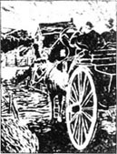
秋天的一天，主人因生意上的事得到远处的镇子上去一趟。约翰给我套上车，我们三个就上路了。雨下得很大，风也非常强劲。当我们来到河边时，水已经快涨上木桥了，大片的田野都被水淹了。在路上地势低洼的地方，水几乎没过了我的膝盖。
我们到了镇上，主人办事用了好长时间。当我们往回赶时，已是快晚上了。风更紧了，当我们穿过一片树林时，我听见主人说：“我还没在这么大的暴风雨中外出过，约翰。”的确，我也这么想呢，狂风在树林间发出那么可怕的呼啸。
“我希望我们快点儿走出这片林子。”主人说。
“是啊，先生，”约翰附和说，“我们可不希望那些树枝砸到头上。”
他话音刚落，随着一阵树木折断的巨响，一棵大树砸过几棵小点儿的树，轰然倒地，横在我们前面的路上！我吓了一大跳，立刻收住脚，不过，我既没有转身，也没有跑开。约翰跳出来飞跑到我身边。
“现在怎么办，约翰？”主人说。
“我们没法儿从这棵树上过去，也绕不开，先生，”约翰说，“我们得到路口，绕远儿走那座木桥。会晚一点儿到家，不过马还不累。”
我们到木桥时，天将近全黑了。水已漫过了木桥的中段。河水上涨时，这是常有的事儿。但是我的蹄子一踏上桥，就觉得不对劲。我立刻收住了脚。
“走啊，黑骏马。”主人说，他用鞭子碰碰我。我没有走，他狠抽了我一下，但我还是不向前走。
“不对劲！”约翰说。他从车上跳下来四处打量。他试着牵着我向前走，“来啊，黑骏马，怎么了？”
我当然没法儿告诉他，但是我知道这桥不安全。
这时桥那头的屋子里跑出来一个人。“站住！站住！”他喊着。
“怎么回事？”我的主人喊道。
“桥中间断了，”那人说，“有一部分被水冲走了，要是你们过来，会掉进水里去的！”
“谢谢你，黑骏马！”约翰对我说，轻轻地牵着我顺着河边右首的路走。
天色更暗了，当我顺着另一条远得多的路小跑回家时，风小些了。两个男人静默了一阵，然后主人开口了。
“我们只差一点儿就淹死在河里了，约翰。”他说，“人们为自己考虑的时候挺聪明，可是，动物根本用不着考虑就能知道，这经常能救人一命，就像今晚救了我们！人们不知道他们的动物有多棒。本应和动物交朋友，可是他们没有。”
到家了，女主人跑出来迎接我们。“我担了好大的心！”她说，“你们都好吗？没出什么事吧？”
“差点儿！”主人说，“但是黑骏马比我们聪明，他使我们没被淹死！”
* * *
12月初的一个清早，主人拿着一封信来到马厩，表情严肃。
“早，约翰，”他说，“告诉我，詹姆斯工作认真吗？他听你吩咐吗？”
“是啊，先生，他一直这样。”约翰回答。
“你不在，他也不偷懒吗？”
“从不，先生。”
“如果赶马出去，他会停下来和朋友聊天，或是把马丢在外面而他去乱串门儿吗？”主人问。
“不，先生，”约翰说，“如果有人这么说詹姆斯，我可不信。我在马厩还没碰到过他这么令人愉快、诚实可靠的小伙子呢！”
主人微笑着看着正站在门边的詹姆斯。“詹姆斯，我很高兴约翰对你的看法和我的一致，”他说，“我太太的哥哥，柯立福德·威廉爵士来了封信，要我帮他找一名诚实可信的马夫。他现在的马夫年纪大了，需要找一个年轻人和他一道干，而且得准备有一天接他的班。你多大了？”
“明年5月就19岁了，先生。”詹姆斯说。
“真年轻。你说呢，约翰？”
“是啊，先生，”约翰说，“可是他又高又壮。虽然还没有多少赶车的经验，但是他动作轻，眼神好。”
“好吧，詹姆斯，”主人说，“晚饭的时候和你妈妈谈谈，然后告诉我你的想法。”
几天后商定詹姆斯在1个月或6个星期后去柯立福德府，所以接下来的几周由他赶车。我们进城出城，穿过拥挤的街道，去道路狭窄的火车站，那条路上还有很多别的马车匆匆忙忙地进站出站。
然后主人和太太决定去拜访住在距家大概75公里的地方的一些朋友。主人说：“你可以为我们赶车，詹姆斯。”
6．The fire
6
The fire
The first day we travelled about fifty kilometres, but James drove carefully and made sure that Ginger and I were always on the smoothest part of the road. It was evening when we reached the hotel where we were going to stay that night. It was in the Market Place and two stablemen came out to us.
The chief stableman was a pleasant old man, and he led me into a long stable with six or eight stalls in it, and two or three horses. The younger man brought in Ginger, and James watched while we were groomed.
'I thought I was quick,' James told the old stableman, 'but you're quicker than anyone.'
'I've worked with horses since I was twelve years old, and I can tell you it's good to be able to work with a well-behaved, well-cared for animal like this,' said the stableman, patting my neck. 'Who is your master?'
'Mr Gordon of Birtwick Park,' said James.
'I've heard of him,' said the stableman. 'He's a good judge of horses, and the best rider in this part of the country.'
'He doesn't ride very often now,' said James, 'not since the poor young master was killed.'
'I read about that in the newspaper,' said the stableman. 'A fine horse was killed too, wasn't it?'
'Yes, an excellent horse,' said James. 'He was the brother of this one, and just like him.'
'Terrible!' said the old man. 'It was a bad place to jump, wasn't it? A man's life and a horse's life are worth more than a hare—or they should be!'
Later that evening, the younger stableman brought in another horse, and a young man with a pipe in his mouth came into the stable to talk to him.
'Towler, go up and get some hay and put it down for this horse, will you?' said the stableman. 'But put down your pipe first.'
'All right,' said the other man, and went up a ladder and through a little door. I heard him step across the floor over my head and push down some hay through a hole in the roof, into the new horse's feeding place.
James came in to look at us before he went to bed, and then the door was locked.
I don't know how long I slept, or what time it was when I woke up, but the air seemed thick and I heard Ginger and another horse moving about worriedly. It was quite dark and I could see nothing. The stable was full of smoke, and it was almost impossible to breathe.
The smoke seemed to come from the little door above me, and I could hear a strange noise up there. The other horses were now all awake, moving about restlessly.
At last I heard someone outside, and then the younger stableman ran in with a light. He began to untie the horses, and tried to lead them out. The first horse would not go with him, nor the second or third. He tried to pull me out, but he was so frightened himself that he frightened me, and I would not move.
The noise above was louder now and there was a shout of 'Fire!' outside. The old stableman came in quietly and quickly and got one horse out, then another. By now the flames were coming down through the roof and the noise was terrible.
Then I heard James's voice, quiet and friendly as it always was. 'Come on, Beauty,' he said, 'we'11 soon get you out of this smoke.' He took off his scarf and tied it over my eyes, then led me out, patting me all the time. He took the scarf off, then shouted, 'Take this horse, somebody, while I go back for the other!'
Windows in the hotel were open and people were shouting. I watched the stable door, where the smoke came out thicker than ever. Then I heard one voice above all the others, and recognized it as my master's.
'James Howard! James Howard! Are you there?'
There was no answer, only the crash of something falling in the stable—but the next moment I saw James coming through the smoke, leading Ginger with him.
'My brave boy!' said the master. 'Are you hurt?'
James shook his head, unable to speak because of the smoke.
Suddenly, I heard the sound of wheels and galloping horses. 'It's the fire-engine!' shouted someone.
Two horses ran past me, pulling the heavy fire-engine. The firemen jumped out, and we went quickly into the wide, quiet Market Place, out of their way.
The master led us to a large hotel on the other side where a stableman came to take us in; then the master hurried off to find his wife.
The next morning, he came to see how we were and to speak to James. I did not hear much, but James looked very happy and the master looked proud of him.
How did the fire start? Someone said they saw Dick Towler go into the stable smoking a pipe, but that when Dick came out he didn't have it. The young stableman said that he asked Dick to go up the ladder to put down some hay, but also told him to put down his pipe first. Dick said that he did this, but nobody believed him.
James said the roof and floor had all fallen in and only the black walls were standing; the two poor horses who could not get out were buried under the fallen roof.
smooth adj. having a surface like glass 光滑的；平滑的。
stall n. （畜舍里的）分隔栏，厩。
chief adj. leading, first in rank 主要的；首要的。
pipe n. tube used for smoking 烟斗。
hay n. dried grass 干草。
restlessly adv. 烦躁不安地。
untie v. loosen the rope, string, etc. 松开；解开。
flame n. visible part of the fire 火焰。
scarf n. long strip worn over the shoulders, the hair or round the neck 围巾；头巾；披肩。
recognize v. know, identify again 认识；认出。
engine n. machine or instrument 机器：器械。
fire-engine n. 救火车。
6 大火
6 大火
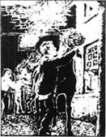
第一天我们赶了大约50公里的路，詹姆斯小心翼翼地赶车，一直注意着让我和金儿走在道路较平坦的那一边。我们到达要住宿的饭店时，已经是晚上了。这是在马克特·普雷斯，两个马夫迎了出来。
马夫长是个令人愉快的老人，他把我牵进了一个有六到八栏的长厩，里面有两三匹马。年轻马夫牵进了金儿。当给我们刷洗时，詹姆斯在一旁看着。
“我以为我手快，”詹姆斯对老马夫说，“可是你比谁都快。”
“我12岁起就干这行了！而且我跟你说，能和像这匹马这样教养好，料理得好的动物一起干活儿，是件愉快的事。”老马夫说着，拍拍我的脖子，“你的主人是谁？”
“伯特威克庄园的高顿先生。”约翰说。
“我听说过他，”马夫说，“他是一个相马的行家，而且是这一带最好的骑手。”
“他现在不常骑马了，”詹姆斯说，“自从可怜的小主人死了以后，他就不骑马了。”
“我在报纸上看到这个消息了，”马夫说，“一匹好马也死了，是吗？”
“是啊，一匹出色的马，”詹姆斯说，“他是这匹马的哥哥，和他长得一样。”
“太可怕了！”老人说，“那地方不能跳，是吗？一个人和一匹马的生命比一只野兔贵重多了——本来就是这么回事！”
晚些时，小马夫又牵进了一匹马，一个小伙子嘴里叼着烟斗跟进来和他聊天。
“透勒，上去给这匹马拿些干草来，好吗？”马夫说，“不过先放下你的烟斗。”
“行啊，”那人说，爬上一架梯子，穿过了一扇小门。我听见他从我头顶的地板走过，从屋顶上的一个孔把干草塞下来，扔进新来的马的槽里。
詹姆斯进来看了看我们，然后就去睡觉了，马厩的门被锁了起来。
我不知睡了多久，也不知醒来时是几点，只看见空气中烟雾重重，听见金儿和另一匹马在不安地四处走动。天色漆黑，我什么也看不见。马厩里浓烟滚滚，简直透不过气来。
烟雾似乎是从我头顶上的小门涌出来，我听见那上面有奇怪的声音。其他的马现在全醒了，焦虑地走来走去。
最后我听见外面有人，年轻的马夫提着灯跑进来。他开始解开马，想把他们牵出去。第一匹马不肯跟他走，第二匹、第三匹也是这样。他想来拉我，可是他自己已经被吓得要命，也把我吓坏了，我也不肯动。
头顶上的怪响现在更大了，外面有人喊“着火了！”这时老马夫安静但迅速地走进来，带了一匹马出去，然后又带出去一匹。现在火焰已从天花板上烧下来，声音可怕极了。
这时我听到了詹姆斯那和往常一样安静友善的声音。“来，黑骏马，”他说，“我们会很快把你弄出这个烟幕阵的。”他解下围巾，蒙住我的双眼，然后带我出来，一路拍着我。他取下围巾，喊道：“来人，勒住这马，我得回去找另一匹马！”
旅店的窗户开着，人们都在大喊大叫。我看着马厩的大门，那儿烟冒得更浓了。然后我听到了一个压住一切的声音，那是我的主人。
“詹姆斯·霍华德！詹姆斯·霍华德！你在那儿吗？”
没有应答，只有马厩里什么东西倒塌的声音——随后我看见詹姆斯从浓烟中钻出来，牵着金儿。
“我勇敢的孩子！”主人说，“你受伤了吗？”
詹姆斯摇摇头。他被烟呛得说不出话了。
突然间，我听到了车轮声和疾驰的马蹄声。“救火车来了！”有人喊道。
两匹马从我身旁跑过，拖着沉重的救火车。消防员跳下来，我们赶紧跑回宽敞、安静的马克特·普雷斯旅店，以免挡着他们的路。
主人带我们去了另一个大旅店，一个马夫出来带我们进去，然后主人赶回去找他的妻子。
第二天一早，他来看望我们，并和詹姆斯谈了几句。我听见的不多，不过詹姆斯看上去很高兴，主人也满怀自豪地看着他。
这场大火是怎么引起的？有人说看见迪克·透勒吸着烟斗走进马厩，而出来时烟斗没带在身边。小马夫说他要迪克上梯子弄些干草下来，但也要他先放下烟斗。迪克说他照办了，不过没人信他。
詹姆斯说房顶和地板都塌了，只有熏黑的墙壁还直立着；两匹可怜的马来不及跑出来，被塌下的屋顶砸死了。
7．Joe Green
7
Joe Green
The rest of our journey was very easy, and the next evening we reached the house of our master's friend, where a groom took us to a comfortable stable. We stayed two or three days, then returned home. John was glad to see us, and we were glad to see him.
'I wonder who will come in my place,' said James.
'Little Joe Green,' said John. 'He's only fourteen and a half but he has a kind heart and wants to come, so I've agreed to try him for six weeks.'
The next day, Joe Green came to learn all he could before James left. He was a nice happy boy and always came to work singing. But then the day came when James had to leave us.
'I'm leaving a lot behind,' he said sadly to John. 'My mother, and you, a good master and mistress, and the horses. And I shan't know anybody at the new place.'
'It's hard to leave your home for the first time,' said John, 'but if you get on well—which I'm sure you will—your mother will be proud of you.'
Everyone was sorry to lose James, but Joe tried hard to learn, and John was pleased with him.
* * *
One night I woke up to hear the stable bell ringing loudly. I heard the door open at John's house, and his feet running up to the Hall. He was back quickly.
'Wake up, Beauty!' he said, coming into the stable. 'We must go quickly now!' And before I could think, he had the saddle on my back and the bridle on my head.
The master was waiting at the Hall door with a letter in his hand. 'Ride for your life, John!' he said. 'Give this to Dr White, then rest your horse and be back as soon as you can. Mrs Gordon is very ill.'
Away went John and I, through the Park, through the village, and down the hill. There was a long piece of flat road by the riverside, and John said, 'Now Beauty, do your best!' I needed no whip, and for two miles I galloped as fast as I could—perhaps even faster than my grandfather, who won the race at Newmarket. When we came to the bridge, John slowed me down a little and patted my neck. 'Well done, Beauty!' he said.
Then I was off again, as fast as before. The air was cold and the moon was bright, and it was a pleasant night. We went through a village, then a dark wood, then uphill, then downhill, and after twelve kilometres, we came to the town.
It was three o'clock when we stopped by Dr White's door. John rang the bell, then knocked on the door like thunder. A window was pushed up and Dr White's head appeared. 'What do you want?' he said.
'Mrs Gordon is very ill,' said John. 'You must come at once, or she'll die. Here's a letter.'
The doctor was soon at the door. 'My horse has been out all day and is exhausted. Can I take yours?'
'My master told me to rest him,' said John, 'but take him if you think it's best, sir.'
'I'll soon be ready,' said the doctor.
John stood by me and patted my neck. I was very hot. Then the doctor came out with his riding whip.
'You won't need that, sir,' said John. 'Black Beauty will go until he drops.'
The doctor was a heavier man than John, and not so good a rider, but I did my very best. Joe was waiting at the gate and the master was at the Hall door. He did not say a word. The doctor went into the house with him, and Joe led me to the stable.
My legs were shaking and there was not a dry hair on my body. The water ran down my legs and I was hot all over. Poor Joe! He was young and knew very little. He did the best he could, cleaning my legs and my chest, but he did not put a warm cloth on me; he thought I was so hot that I would not like it. He gave me some cold water to drink, then he gave me some food and went away.
Soon I began to shake and tremble with cold, and I ached all over. I wished John was there, but he had twelve kilometres to walk, so I tried to sleep.
After a long time, I heard John at the door. I gave a low cry, and he was at my side in a moment. I could not tell him how I felt, but he seemed to know immediately. He covered me with three warm cloths, then ran for some hot water and made me a warm drink.
John seemed very angry. 'Stupid boy!' he said to himself, over and over again. 'No cloth put on, and I suppose the water was cold too. Boys are no good!'
I became very ill, and could not breathe without pain. John looked after me day and night, and my master often came to see me too.
'My poor Beauty,' he said one day. 'My good horse, you saved your mistress's life. Yes, you saved her life.'
I was very glad to hear that. John told my master that he never saw a horse go so fast.
One night, Tom Green, Joe's father, came to help John give me my medicine, then stayed for a while. At first both men were silent, then Tom said, 'John, please say a kind word to Joe. The boy is heart-broken; he can't eat his meals, and he can't smile. He knows it's his fault Beauty is ill, but he did his best. He says if Beauty dies, no one will ever speak to him again. But he's not a bad boy.'
After a short pause, John said, 'I know he meant no harm, but I'm proud of that horse, and I hate to think his life may be thrown away like this. But I'll give the boy a kind word tomorrow, if Beauty is better.'
I heard no more of this conversation, as the medicine did well and sent me to sleep, and in the morning I felt much better.
Joe learned quickly after this, and was so careful that John began to give him many things to do. One day, John was out and the master wanted a letter taken immediately to a gentleman's house about five kilometres away. He told Joe to saddle me and take it.
The letter was delivered and we were returning through a field where we saw a cart full of bricks. They were so heavy that the wheels of the cart were half-buried in the soft ground, and the horses could not move the cart at all. The man leading the horses was shouting and whipping them without stopping.
'Don't whip the horses like that,' Joe shouted at him. 'The wheels are half-buried and won't move. I'll help you take some bricks out to make the cart lighter.'
'Mind your own business!' said the man angrily. He was in a terrible temper and more than half-drunk.
Joe turned me, and we galloped towards the house of the brickmaker, Mr Clay. Joe knocked on the door.
The door opened. 'Hallo, young man,' began Mr Clay.
'There's a man in your field whipping two horses to death!' Joe told him, his voice shaking with anger. 'I told him to stop, but he wouldn't. I offered to help him lighten the cart, but he refused. I think he's drunk. Please go, sir!'
'I will!' said the man, and hurried off.
When we got home, Joe told John all about it.
'You did the right thing,' said John. 'Many people would ride by and say it was none of their business. But cruelty is everybody's business.'
Just before dinner, the master sent for Joe. The drunken man was accused of cruelty to horses and Joe was wanted to tell his story to the police.
'I'll tell it gladly,' said Joe.
We heard afterwards that the poor horses were so exhausted and so badly beaten that the man might have to go to prison.
Joe came across and gave me a friendly pat. 'We won't allow cruelty, will we, old friend?' he said.
And he seemed to have grown up suddenly.
journey n. trip; an act of going from one place to another, esp. at a long distance 旅行；远足。
comfortable adj. giving comfort to body; free from suffering, anxiety, pain, etc 安逸的；舒服的。
for one's life as if or in order to escape death 拼命地。
flat adj. smooth and level; even 平坦的。
whip n. lash (long strip, cord, etc.) used for urging a horse or for punishing 鞭子（用以策马或惩罚）。
appear v. come into view; become visible 出现。
exhaust v. use up the strength or energy of; tire out 使精疲力尽。
drop v. fall or sink to the ground 倒下；跌倒。
ache v. have a continuous dull pain 隐隐作痛；持续地疼。
pause n. short stop 中止；停顿。
heart-broken adj. 心碎的。
harm n. damage, injury 伤害；损害。
deliver v. take sth. to some place or the buyers 传送；交付。
bricks n. 砖。
offer v. hold out, put forward 提供；提出。
send for ask or order sb./ sth. to come 派人去叫。
accuse sb. (of) say sb. has done wrong, broken the law or is to be blamed 控告某人；控诉。
7 乔·格林
7 乔·格林
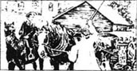
接下来的旅途就简单多了，第二天晚上我们就到了主人的朋友家，一个马夫带我们到了一个舒适的马厩。我们住了两三天，然后回家。约翰又见到我们，很高兴，我们也是一样。
“不知道谁会来顶替我呢。”詹姆斯说。
“是小乔·格林，”约翰说，“他只有14岁半，可是他善良，也愿意来，我已同意让他试6个星期的工。”
第二天，乔·格林来了。他得赶在詹姆斯走之前学会干所有的活计。他是个快活可爱的孩子，来干活时老是唱着歌。但终于还是到了詹姆斯离开我们的时候。
“我舍弃了这么多，”他伤心地对约翰说，“我妈妈，你，一个好主人和太太，还有这些马。在新的地方我谁也不认识。”
“第一次离家的确不容易，”约翰说，“但如果你能适应——我相信你能——你妈妈会为你自豪的。”
大家都为詹姆斯的离开而难过。不过乔在很努力地学，约翰和他在一起挺高兴。
* * *
一天夜里，我醒来时，马厩的铃猛响着。我听见约翰住的房子的门开了，从脚步声可以听出他飞快地向大宅跑去。很快他又回来了。
“醒醒，黑骏马！”他说着，冲进马厩里，“我们必须马上走！”我还没来得及想，他就把马鞍备好，笼头也给我戴上了。
主人在大宅门口等着，手里拿着一封信。“拼命跑，约翰！”他说，“把这封信交给怀特大夫，让马歇歇，然后再尽快赶回来。太太病得很厉害。”
我和约翰冲了出来，穿过庄园，穿过村子，冲下山去。河边的一长段路很平坦，约翰说：“现在，黑骏马，你尽力吧！”我不需鞭打，尽我所能飞奔了2英里——也许比我那得了纽马克特赛马冠军的爷爷跑得还快。当我们来到桥边时，约翰让我稍微放慢速度，拍着我的脖子说：“真不错，黑骏马！”
我又跑了起来，和刚才一样快。空气寒冷，月光皎洁，这是一个令人愉快的夜晚。我们穿过了一个村子，然后是一片黑黢黢的林子，然后上山、下山，跑了12公里后，我们进了城。
当我们停在怀特大夫的门前时，已是凌晨3点了。约翰按了门铃，然后把门擂得像打雷一样响。一扇窗子被推上去，怀特大夫的头探了出来。“你要干什么？”他说。
“高顿太太病得很厉害，”约翰说，“您必须马上来，先生，不然她会死的！这是信。”
医生很快出现在门口，“我的马出去了一整天，已经很累了，我能骑你的马吗？”
“我主人让我歇一歇马，”约翰说，“不过如果您觉得这样最好，那就骑吧，先生。”
“我很快就准备好。”医生说。
约翰站在我身旁，拍着我的脖子，我热得要命。医生带着鞭子出来了。
“您不需要用鞭子，先生，”约翰说，“黑骏马跑死也不会停下来。”
医生比约翰重，而且骑术不太好，不过我拼尽全力。乔在大门口等着，主人则在大宅门口等着。他一言不发。医生随他进了房间，乔把我带回马厩。
我的腿在瑟瑟发抖，全身上下没有一根毛是干的。汗水顺着腿流下来，我全身热得要命。可怜的乔！他小小年纪，懂得很少。他尽他所能，洗干净我的腿和胸，可是没有给我盖上暖和的布，他觉得我已经很热了，可能不会喜欢盖布。他喂了我一些冷水和一些食物，然后就走开了。
很快我开始发抖，冷得直哆嗦，浑身上下都痛。我真希望约翰在，但是，他得步行12公里，我只好试着睡觉。
过了很久，我听见约翰在门口。我低低地呜咽了一声，他立刻来到我身旁。我没法儿告诉他我的感觉，但他似乎立刻就明白了。他给我盖了3块暖和的布，跑去取了些热水让我趁热喝下。
约翰看上去很生气。“傻小子！”他一遍又一遍地自言自语着，“一块布也不盖，估计水也是冷的。小孩子真不像话！”
我病得很厉害，每呼吸一下都觉得疼。约翰夜以继日地看护我，主人也常来看望我。
“我可怜的黑骏马！”一天他说，“我的好马，你救了你女主人的命。是啊，你救了她的命。”
我听见这个很高兴。约翰告诉主人说他从没见过哪匹马跑得这么快。
一个晚上，汤姆·格林，乔的爸爸，来帮约翰给我喂药，然后又多呆了会儿。起先两个男人都沉默着，然后汤姆说：“约翰，请对乔说句好话吧。这孩子心都碎了，他吃不下饭，也不笑了。他知道黑骏马生病是他的错，不过他尽力而为了。他说如果黑骏马死了，就不会有人再理他了。可他不是个坏孩子。”
短暂的沉默之后，约翰说：“我知道他不是故意的，但是我以这匹马为荣，我不能忍受就这么看着他死去。不过，明天我会对这孩子说句好话，如果黑骏马能好一点儿的话。”
我没再听到下面的谈话，因为药开始起作用，我昏昏欲睡了。早上，我觉得好多了。
这件事之后，乔学习进步很快，而且特别仔细。约翰开始把很多事交给他去办。一天，约翰外出了，主人想把一封信立刻送到5公里外的一位先生家里，他吩咐乔给我备鞍，把信送去。
信被送到了。归途中，我们穿过一片田野，在那儿我们看见一辆装满砖头的马车。沉重的车身压得轮子的一半陷入了松软的地里。马根本拉不动车。赶车的人不断地喊叫，抽打着马匹。
“别抽得那么狠，”乔冲赶车人喊着，“轮子一半儿陷下去了，动不了啦。我帮你卸下些砖来，让车轻一点。”
“你少管闲事！”那人恼怒地说。他正大发脾气，而且已醉得可以了。
乔让我转过身，我们朝着制砖人克雷先生的房子飞奔过去。乔敲了门。
门开了。“喂！小伙子。”克雷先生开口道。
“你田里有个人快把两匹马抽死了！”乔告诉他，气得声音发抖，“我叫他住手，可他不听。我提出帮他把车弄轻些，他也不干。我看他是醉了。您去一下吧，先生！”
“我会去的！”克雷先生说，他立刻就赶了过去。
我们到家后，乔对约翰讲了整个事情。
“你做得对，”约翰说，“很多人会擦身而过，觉得那不关他们的事。但是制止残暴的行为是每个人都应该做的事。”
晚饭前，主人派人来叫乔。那个醉汉被指控虐呆马匹，乔被叫去向警察讲述经过。
“我很乐意去讲一讲。”乔说。
事后，我们听说那两匹可怜的马已累得精疲力竭，还被打得半死。那人有可能要进监狱。
乔过来友好地拍了拍我。“我们不允许残暴的行为，是吗，我的老朋友？”他说。
他看上去一下子长大了。
8．Earlshall Park
8
Earlshall Park
I lived at Birtwick Park for three happy years, but then changes came. Our mistress was often ill and the doctor advised her to go and live in a warm country for two or three years. Everyone was very sorry, but the master immediately started making arrangements to leave England.
John did his work silently and sadly, and Joe didn't sing any more. Then we heard that the master had sold Ginger and me to an old friend of his, Lord Gray. Merrylegs was given to the neighbour, Mr Blomefield, and Joe was employed to look after him. John was offered several good jobs but he wanted to wait and look around.
'I want to train young horses,' he told the master.
'I cannot think of anyone more suitable for that work than you, John,' said the master. 'If I can help you in any way, write to me.'
The next morning, John took Ginger and me to Earlshall Park where Lord Gray lived. There was a very fine house and lots of stables. John asked for Mr York, who was going to be our new driver.
Mr York was a good-looking man of about forty, with a voice that expected to be obeyed. He called a groom to take us to our boxes, then invited John to have a drink with him. We were taken to a pleasant stable and put in boxes next to one another, then we were groomed and fed. Half an hour later, John and Mr York came to see us.
Mr York looked at us carefully. 'Is there anything you want to mention about them, Mr Manly?' he said.
'I don't believe there's a better pair of horses in the country,' said John, 'but they're not alike. The black one has the most perfect temper I've ever known. The other was badly treated before she came to us, but has grown better-tempered in the last three years. We've never used a bearing rein with either of them.'
'They'll wear one here,' said York. 'Lady Gray follows the fashion, and if her horses are not reined up tight, she doesn't like it.'
'I'm sorry to hear that,' said John. He came to pat each of us for the last time. I held my face close to him, which was all I could do to say goodbye. And then he was gone, and I have never seen him since.
Lord Gray came to look at us the next day and seemed pleased. He heard what John had said about us. 'Keep an eye on the mare,' he said to York. 'Don't make the bearing rein too tight at first, and I'll mention it to my wife.'
In the afternoon, we were harnessed to the carriage and Lady Gray came out and looked at us. She was a tall, proud-looking woman and did not look pleased, but she said nothing and got into the carriage.
The bearing rein annoyed me but did not pull my head any higher than I was used to carrying it. I was worried about Ginger, but she seemed quite happy.
But the next afternoon when Lady Gray came down the steps, she said, 'York, you must put those horses' heads higher; they don't look nice.'
'I'm sorry, my Lady,' said York, 'but they have not been reined up for three years. But if it pleases you, I can take them up a little more.'
'Do that,' she said.
That day we had to pull the carriage up a steep hill. I wanted to put my head forward to make the work easier, but I couldn't.
'Now you can see what it's like,' said Ginger, when we came back. 'If it doesn't get any worse, I shall say nothing. But I won't have the rein pulled up tight!'
Each day the bearing reins were shortened a little more; then one day Lady Gray came out later than usual and said, 'York, when will you get those horses' heads up? Pull them up at once, and let's have no arguing.'
York came to me first and made the rein very tight. Then he went to Ginger. But the moment he took off the rein in order to shorten it, she stood up on her back legs. York and the groom could not control her. She kicked herself out of the carriage and fell down, kicking me on the leg as she went. York sat on her head to keep her still and shouted, 'Let the black horse out! Undo the carriage! Cut the harness!'
The groom cut me out of the harness and hurried me back to my box, then ran back to York. I was angry and my leg hurt, and I felt that I wanted to kick the first person who came near me.
Soon after, Ginger was led in by two grooms. York was with her and came to look at me.
'I knew those bearing reins would cause trouble,' he said to himself. He saw where I had been kicked and washed the place gently with hot water to help the pain.
Lord Gray was angry when he heard what had happened. He blamed York for taking orders from the mistress, and York said that he would take orders only from Lord Gray himself from now on. But things went on the same as before, except that Ginger was never put into the carriage again. I pulled it with a horse called Max who was used to the tight rein. But those four months pulling Lady Gray's carriage were terrible. The sharp bit cut into my tongue and mouth, the rein hurt my neck and made it difficult to breathe, and I felt tired and very miserable.
In the spring, Lord Gray and some of his family went up to London and took York with them. Two daughters remained at the Hall. Lady Harriet never went out in the carriage, and Lady Anne preferred riding on horseback with her brother or cousins. She chose me for her horse and I enjoyed these rides, sometimes with Ginger, sometimes with Lizzie, a horse liked by the young gentlemen.
There was a gentleman called Blantyre staying at the Hall, who always rode Lizzie and was so pleased with her that Lady Anne wanted to try her.
'I don't advise it,' said Blantyre. 'She's too easily frightened for a lady to ride.'
'My dear cousin,' said Lady Anne, laughing, 'I've been riding horses since I was a baby and have followed the hounds many times. Now, help me up.'
So Blantyre helped her into the saddle, then climbed on me. Just as we were moving off, Lady Harriet asked for a message to be taken to Dr Ashley in the village.
The village was about two kilometres away, and the doctor's house was the last one in it. Blantyre got off to open the gate for Lady Anne but she said, 'I'll wait here for you.'
He went off and we waited.
There was a field with an open gate on the opposite side of the road, and at that moment some young horses came trotting out. They were wild and excited, and there was a boy behind them, waving a large whip. Suddenly, one of the young horses ran across the road, and banged into Lizzie's back legs. She gave a violent kick, nearly unseating Lady Anne, and immediately galloped away at full speed.
I gave a loud neigh for help and made a noise with my feet until Mr Blantyre came running out of the doctor's house. He saw Lizzie and Lady Anne, now far away down the road, and quickly jumped into the saddle, and we raced after them.
For about two kilometres the road was straight, then it turned to the right before becoming two roads. Long before we came to the bend, Lady Anne was out of sight. Which way had she gone? A woman was in her garden, looking up the road. 'Which way?' shouted Blantyre.
'To the right!' cried the woman.
Away we went, up the right-hand road. We saw her for a moment, then she was gone again round another bend. Several times we saw her, but lost her again. Then we came to some rough land, very uneven and full of holes in the ground—the worst possible place for galloping.
On this open ground we could now see Lady Anne clearly, her long hair flying out behind her in the wind, and slowly we began to catch up. There was a wide ditch ahead and I was sure it would stop them, but without a pause Lizzie jumped it—and fell.
I cleared the ditch and landed safely. Lady Anne was lying on the ground, not moving. Blantyre jumped down beside her and called her name, but there was no reply. Her face was white and her eyes were closed.
'Annie, dear Annie, do speak!' he cried.
There were two men cutting grass close by and they saw Lizzie galloping away without a rider and came across.
'Can you ride?' Blantyre asked one of them.
'I'm not a good horseman, sir,' he said. 'But I'll do my best.'
'Ride this horse to the doctor's and ask him to come immediately, then go on to the Hall,' said Blantyre. 'Tell them all you know and ask them to send a carriage.'
The man climbed into my saddle and we galloped off. I tried not to shake him about too much, and he soon discovered that he needed no whip.
There was a lot of excitement at the Hall when they heard what happened. I was put into my box, the saddle and bridle were taken off and a cloth was thrown over me.
Two days later, Blantyre came and patted me.
'You did well,' he said. 'I'm sure you knew Annie was in danger. She must ride only you from now on.'
From this I knew that my young mistress was out of danger and would soon be able to ride again.
arrangement n. putting in order; making plans in advance 安排；筹备
employ v. give work to 雇用
be suitable for be right for sth 适宜于；适合。
expect v. wish 期望
fed v. feed的过去式；feed v. give food to 喂养。
mention v. speak of, talk about 谈论；提及。
treat v. act or behave toward 对待。
steep adj. rising or falling sharply 陡峭的。
take off lift, remove 拿下；取下。
still adj. calm, quiet; without movement 静止的；不动的。
undo v. untie, loosen 松开；解开。
cause v. make happen 引起；带来。
prefer v. like better, choose rather 较喜欢；宁愿。
cousin n. child of one's uncle or aunt 堂（表）兄弟姐妹。
opposite adj. having a position on the other side, facing or back to back 相对的。
violent adj. using great force 猛烈的；凶暴的。
neigh n. cry of a horse 马嘶。
bend n. curve or turn 转弯处。
be out of sight disappear from view 看不见了；从视野中消失。
ditch n. channel in fields or road 壕沟。
clear v. jump over 跳过。
excitement n. 慌张；慌乱；忙乱。
8 沙尔伯爵庄园
8 沙尔伯爵庄园
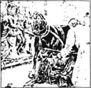
我在伯特威克庄园过了快乐的3年，然后变故来了。我们的女主人经常生病，医生建议她去一个温暖的国家呆两三年。每个人都很难过，但是主人立刻着手安排离开英国。
约翰沉默而难过地做他的事，乔也不再唱歌了。接着我们听说主人把金儿和我卖给了他的一个老朋友，格雷勋爵。乐腿儿给了邻居布劳姆菲尔德家，乔被雇去照料他。主人给约翰找了好几个好工作，然而他想再等等看。
“我想训练年轻的马。”他告诉主人说。
“我简直想不出别人有谁比你更适合这工作，约翰，”主人说，“如果有什么地方需要我帮助，给我写信。”
第二天一早，约翰把我和金儿带到格雷勋爵住的沙尔伯爵庄园。那儿有一幢非常漂亮的大房子和许多马厩。约翰找了约克先生，他是我们的新车夫。
约克先生约40岁，长相英俊，语气中含有权威感。他叫一个马夫带我们去马厩，然后请约翰去喝一杯。我们被带到一个漂亮的马厩，栏厢互相挨着，然后洗了澡，吃了饭。半小时以后，约翰和约克先生来看我们。
约克先生仔细地看着我们，“曼利先生，关于他们您还有什么要交代的吗？”
“在这一带您找不到比他们更棒的两匹马了，”约翰说，“但是他们并不相同。黑色的这匹是我所见过的马中脾气最好的；另一匹来我们这儿以前，曾受过虐待，但是这3年脾气也变好了。我对他们从不用绳套。”
“在这儿他们得戴上，”约克说，“格雷夫人紧跟潮流，如果她的马不被紧紧地勒住，她会不喜欢的。”
“真遗憾。”约翰说。他走上前来最后一次挨个拍了拍我们。我把脸凑近他，我只能这样道再见了。然后他走了，从那以后我再也没见过他。
格雷勋爵第二天来看我们，他好像挺高兴。他听了约翰对我们的描述。“对母马注意点儿，”他对约克说，“一上来别把绳套勒得太紧，我也会对太太说的。”
下午，我们被套上车，格雷夫人出来看了看我们。她是一个高高的、表情傲慢的女人，看上去不是很高兴，但她没吱声就钻进了马车。
绳套弄得我挺烦，不过倒没把我的头拉高到我不习惯的地步。我为金儿担心，但她看上去倒还开心。
可是第二天下午格雷夫人走下台阶时说：“约克，你必须把马头弄得高一点儿，他们看上去可不好看。”
“对不起，夫人，”约克说，“可是他们有3年没被勒过了。不过如果您喜欢这样，我会让他们抬高一点儿的。”
“那就抬高吧。”她说。
那天我们得拉车爬一座很陡的小山。我想探头向前使劲能更轻松完成工作，可是做不到。
“现在你知道这滋味了吧，”回来时，金儿对我说，“如果不会更糟，那我就什么也不表示，但是我可不愿被缰绳紧紧地勒起来！”
每天绳套都勒得更紧一点儿。然后有一天，格雷太太出来得比平时晚，她说：“约克，你什么时候才能让马抬起头来？立刻拉起来，别再争论了。”
约克先过来把我的绳套勒得非常紧，然后他走向金儿。可是他刚一拆下绳套，准备缩短，金儿便后腿直立起来。约克和马夫控制不住她。她从车里挣脱出来，摔倒在地，其间还踢了我的腿一下。约克骑在她头上让她动弹不得，并喊道：“把黑马弄出来，卸下马车，把绳子砍断！”
马夫砍断绳子，把我赶回围栏，然后跑回约克那儿。我很生气，腿也疼，这时谁靠近我，我就想踢谁。
很快，金儿被两个马夫牵进来。约克和她一道进来，他过来看我。
“我就知道那些绳套会惹麻烦。”他自言自语。他看着我被踢伤的地方，并用热水轻轻地冲洗伤口，以止住疼痛。
格雷勋爵听说这事后很生气。他责备约克听了女主人的话。约克说今后他只听格雷勋爵一人的命令。但是一切如常。只是金儿不再被套上马车了。我和另一匹挺习惯绳套的叫马格斯的马一起拉车。可是，给格雷太太拉车的4个月真是糟透了。锋利的嚼口切进我的舌头和嘴巴，绳套勒伤了我的脖子，我呼吸困难，疲惫不堪，境况悲惨。
春天，格雷勋爵和家人去伦敦，约克随行。两个女儿留在家里。哈丽埃特小姐从不坐车出行，安小姐则最喜欢和兄弟们骑马出游。她挑我做她的坐骑，我也喜欢这种游玩，有时和金儿一起，有时和丽奇一起。年轻的先生们喜欢骑丽奇。
有一个年轻人，叫布兰太尔，他留在大宅里。他一直非常喜欢骑丽奇，引得安小姐也想试试。
“你最好别骑，”布兰太尔说，“她太容易受惊吓了，不适合小姐骑。”
“亲爱的表哥，”安小姐大笑着说，“我还是小宝宝时就开始骑马了，还参加过许多次打猎。来，帮我上马。”
布兰太尔只好帮她跨上马鞍，然后他骑上我。正当我们要出发时，哈丽埃特小姐来请我们带一封信给住在村子里的阿什莱大夫。
村子在两公里以外，医生的房子在尽头。布兰太尔下马去为安小姐开门，可是她说：“我在这儿等你。”
他就一个人去了，我们在原地等着。
路对面有一块田地，大门是敞开的，有一些年青的马小跑着撒欢儿。他们野性十足，神情兴奋，有一个男孩挥舞着长鞭跟在后面。突然一匹马跑过公路，撞着了丽奇的后腿。她猛地尥了个蹶子，险些把安小姐掀下来，然后立刻开始全速狂奔。
我长嘶了一声，并用脚刨地发出声音，直到布兰太尔先生从医生家里跑出来。他看见了丽奇和安小姐，她们现在已经在路的尽头了。他立刻跳上马鞍，我们追了过去。
有两公里的路是直的，然后右转，再分岔。我们离转弯还很远时，已经看不到安了。她走了哪条路呢？一个妇女站在她的花园中，抬头看着大道。“哪条路？”布兰太尔喊道。
“右边！”妇女喊。
我们转向右边的路。又看见她了，但接着她又在另一个弯道处消失了。有好几次我们看见了她，接着又看不见了。后来我们来到一片坑坑洼洼的地带，非常不平坦，地面上还有许多坑——是最不适合于疾驰的地方。
在这片开阔地带，我们现在又能清楚地看到安小姐了，她的长发在背后飘扬在风中。慢慢地，我们赶了上去。前方有一条很宽的壕沟，我肯定那沟能截住他们，可是丽奇停也没停就跳了过去，然后摔倒在地上。
我跃过壕沟并安全着地。安小姐躺在地上一动不动。布兰太尔跳下马蹲在她身旁叫着她的名字，可是没有回应。她脸色苍白，双眼紧闭。
“安妮，亲爱的安妮，说话呀！”他喊着。
近处有两个男人正在割草，他们看见背上无人的丽奇跑掉了，忙赶了过来。
“你会骑马吗？”布兰太尔问其中的一个。
“我骑得不好，先生。”他说，“但我会尽力的。”
“骑这匹马去医生那儿，叫他马上来，然后再去大宅，”布兰太尔说，“告诉他们你看到的一切，让他们带辆马车来。”
那人上了我的鞍，我们就飞奔而去。我尽量不使他摇晃得太厉害，他也很快发现对我根本不需用鞭子。
家里的人听说了发生的事情，都非常震惊。我被带回马厩，马鞍和笼头被卸了下来，一块布扔了过来盖在我身上。
两天后，布兰太尔过来拍了拍我。
“你干得不错，”他说，“我敢肯定当时你知道安妮有危险。从今往后她只许骑你。”
从这话我判断出我年轻的女主人已经脱离了危险，而且很快就可以骑马了。
9．The accident and new masters
9
The accident and new masters
A man called Reuben Smith looked after us while York was in London. He was gentle and clever with horses, and an excellent driver. But he had one fault—he sometimes drank too much. For weeks or months he was all right, but then without warning he would begin to drink heavily and behave badly. But he was a useful man so York had kept quiet about Smith's drinking, saying nothing to Lord Gray. Then one night Smith drove some ladies and gentlemen home from a party and was so drunk that he could not hold the reins. York could not hide this and Lord Gray told Smith to leave.
However, some time later, York spoke again to Lord Gray, who was very kind-hearted, and he took Reuben Smith back. Smith promised never to get drunk again and kept his promise, and because of this he was told to look after the stables while York was away.
One day the carriage needed some repairs so it was arranged that Smith would take it to town, leave it at the carriage maker's, and then ride me back again. Mr Blantyre wanted to go to the station, so he went with us.
At the station, Mr Blantyre gave Smith some money and said, 'Take care of Lady Anne, Reuben, and don't let anyone else except her ride Black Beauty.'
We left the carriage at the maker's, and Smith rode me to the White Lion hotel. He told the stableman to give me some food and have me ready for four o'clock. One of my front shoes was loose but the stableman did not see it until four o'clock. Smith came back at five and said he would now leave at six because he'd met some old friends. The stableman told him about the loose shoe.
'It'll be all right until we get home,' said Smith.
He finally came back at nine o'clock, shouting loudly and in a very bad temper. We left and almost immediately he began to gallop, often giving me sharp cuts with the whip, although I was going at full speed. Before we were out of the town my shoe came off, but Smith was too drunk to notice.
It was very dark, and on the rough road at that speed, my foot was soon cut and bleeding from the sharp stones. I could not go on; the pain was too great, and I fell violently on both my knees. Smith was thrown off. He tried to get up but couldn't, then he lay still.
I could do nothing but wait.
It was nearly midnight when I heard a horse's feet and the wheels of a carriage. I neighed loudly, and was very happy to hear an answering neigh from Ginger, and men's voices. Then the carriage came out of the darkness and stopped.
Two men jumped down beside Smith. 'It's Reuben,' said one, 'and he's not moving, Robert.'
'He's dead,' said Robert, touching Smith. 'His hands are cold and his head is covered with blood.'
They looked at me and saw my cut knees.
'The horse has been down and thrown him!' said Robert. He tried to lead me forward but I almost fell again. 'He's bad in the foot, too. No wonder he went down, riding over these stones without a shoe! Reuben was drunk, Ned. He would never ride a horse without a shoe unless he was drunk.'
Ned took Smith's body back in the carriage, and Robert tied his handkerchief round my foot and led me slowly home. No one blamed me for the accident. The owner of the White Lion hotel said that Reuben Smith was drunk when he left.
But I had to leave Earlshall, and so did Ginger.
For a month or two I was allowed to live out in a field, and one day Ginger was brought in to join me. She had been ruined by the hard riding of Lord Gray's son, and after twelve months' rest she was going to be sold. And although my knees got better, they looked very ugly and so I was no longer suitable for a fashionable family. It was very pleasant being in the field with Ginger, but one day Robert came in and took me away. We were both very sad to say goodbye to each other, Ginger and I.
I was sold to a man in Bath who kept many horses and different kinds of carriages for hire. I was a 'job horse' and all kinds of people hired me. Some were good drivers, others were very bad. Then one man persuaded my master to sell me to a friend of his who wanted a safe, pleasant horse for riding.
And so that summer I was sold to Mr Barry.
Mr Barry knew very little about horses but he hired a comfortable stable for me, and a man called Filcher to look after me. He ordered the best oats, and plenty of other good food for me to eat, too.
For a while all went well, but then there seemed to be fewer oats and more grass in my meals. The grass food, though very good, was not enough to keep me strong and healthy. However, I could not say anything and it went on for about two months.
Then one afternoon my master rode into the country to see a friend—a gentleman farmer who knew about horses, and who looked very closely at me.
'Your horse doesn't look as well as he did when you first had him, Barry,' he said, feeling my neck and shoulders. 'See how wet and warm he is—after just a gentle ride!'
'My groom says that horses are never in good condition in the autumn,' said my master.
'But this is only August!' said the farmer. 'With your light work and the good food, he shouldn't be like this. I don't know who eats your oats, my friend,' he went on, 'but I doubt that your horse gets any of them. I advise you to watch your groom more closely.'
Oh, how I wanted to speak! I wanted to tell my master where his oats went to. My groom came every morning at six o'clock, bringing his little boy with him. The boy carried a basket and went into the room where the oats were kept. I would see them filling a bag with oats and putting the bag into the basket.
Five or six mornings after the visit to the farmer, the boy left the stable with his basket of oats, but came back soon after, looking frightened, with two policemen holding his arms.
'Show me where your father keeps the food for his chickens,' one policemen said to the boy.
The boy began to cry but there was no escape. Moments later, the policemen found another empty bag like the one in the boy's basket, and they took Filcher away with them. That was the last I ever saw of him.
Another groom was employed, but he was very lazy about cleaning and I became thin and unhealthy from standing in a wet, dirty stable. After all this trouble with grooms, Mr Barry decided to stop keeping a horse and I was sent to a horse fair—a place where hundreds of horses were bought and sold, and more lies were told, I think, than in any other place in the country.
That day I was lucky. I was bought for twenty-five pounds by a man called Jeremiah Barker, but everyone called him Jerry and I shall do the same.
behave v. act, conduct (oneself) 行为；举止。
drunk adj. overcome by drinking alcohol 醉酒的。
arrange v. plan in advance 计划。
come off become separated from 掉下；脱落。
be thrown off fall down from 摔出；摔下。
blame sb. for sth. fix on sb. the responsibility for sth. done or not done 责备；归咎于。
hire v. temporarily use something for an agreed payment 租用；n. money paid for use 租金。
persuade v. convince, cause sb. to believe by reasoning 说服；使相信。
safe adj. without danger 安全的。
in good condition in good state 处于好状态。
doubt v. feel uncertain, call in question 怀疑；不相信。
escape n. getting away, getting free 逃跑；逃脱。
fair n. market, esp. for cattle, sheep, horse 集市。
9 事故和新主人
9 事故和新主人
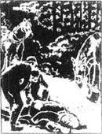
一个叫鲁宾·史密斯的男人在约克去伦敦的时候照料我们。他对马态度温和，为人聪明，是个好车夫。可是他有一个缺点：有时酒喝得太多。几个星期或几个月他都很正常，然而突然间他就会开始酗酒，行为也变得粗鲁。但他基本上还是个能干的人，所以约克对他酗酒的事一直保持沉默，没对格雷勋爵说过什么。一天晚上，史密斯送一些女士和先生们从舞会回家，可他醉得不成样子，连缰绳都抓不住了。约克这回没法再帮他隐瞒，于是格雷勋爵把他辞了。
可是，没过多久，约克又对格雷先生说情，好心的格雷先生答应让鲁宾·史密斯回来。史密斯答应再也不喝醉了。由于他遵守誓言，约克不在时，他就被叫去看守马厩。
一天马车需要进行些修理，史密斯就被叫去赶车进城，把车放到造车厂，再骑我回来。布兰太尔先生想去车站，所以他和我们一起走。
在车站，布兰太尔先生给了史密斯一些钱，说：“照顾好安小姐，鲁宾，除她以外别让别人骑黑骏马。”
我们把车留在车厂，史密斯骑我到了白狮饭店。他让马夫给了我些吃的，吩咐他们4点钟备好我。我的一只前掌松了，可是马夫直到4点才发现。史密斯5点回来了，说他遇上了些老朋友，要在6点才能走开。马夫告诉他我的掌松了。
“坚持到家没问题。”史密斯说。
他最后9点才回来，脾气很坏，还高声叫嚷着。刚一出饭店他就立刻骑着我飞奔起来，还不时狠狠地抽我一鞭子，也不管我已经在全速奔驰了。在我们出城之前，我的掌就脱落了，可是史密斯醉得厉害，根本没发现。
天色很黑了，在那样高低不平的路上，那样快地奔跑，我的脚很快就被锋利的石头划伤了，而且流出血来。我没法儿继续走了；脚疼得太厉害了，我重重地跪了下来。史密斯被甩了出去。他试着爬起来，可是没成功，然后他就一动不动地躺在那里了。
我只好等着。
当我听到马蹄声和马车的轱辘声时已近午夜了。我长嘶了一声，然后惊喜地听到了金儿的应答，还有男人的声音。马车从夜色中驶来并停了下来。
两个男人跳下车站在史密斯身旁。“是鲁宾，”一个说，“他一动也不动，罗伯特。”
“他死了，”罗伯特摸了摸史密斯说，“他的手冰凉，头上满是鲜血。”
他们看了看我，发现了我受伤的膝盖。
“这马摔倒了，把他甩了出去！”罗伯特说，他想牵着我向前走，可我差点儿又摔倒。“他的蹄子也不对劲。怪不得他摔倒呢，没有掌还在这片石头地上跑！鲁宾醉了，耐德。除非他醉了，不然他不会骑一匹没戴掌的马。”
耐德把史密斯的尸体扛进车里，罗伯特用他的手帕把我的脚包了起来，牵着我慢慢地走回家，谁也没为这场事故责怪我。白狮饭店的主人证实鲁宾·史密斯在离开饭店时就已经醉了。
但是我得离开沙尔伯爵庄园了，金儿也是。
有一两个月人们让我生活在田野里，一天金儿也被牵来和我一道。她被格雷勋爵的儿子的一通狠骑给累伤了。经过12个月的休整以后，她将被卖掉。至于我，虽然我膝盖的伤好多了，可它们看上去丑陋不堪，所以我不再适合于留在一个时髦的家庭里。和金儿一块儿在田野真好，可是，一天罗伯特来把我带走了。我和金儿两个互道了再见，心里都很难过。
我被卖给贝思的一个拥有很多马和各种马车并把它们出租的人。我现在成了一匹“工作马”，有各种各样的人来租我。有的是好骑手，其他的则糟透了。后来有一个人说服我的主人把我卖给他的一个朋友，这个人想要一匹安全的、舒服的马来骑。
于是，那个夏天我被卖给了白利先生。
白利先生不懂马，但他为我租了一个很舒适的马厩，还雇了一个叫费舍尔的马夫照料我。他还买最好的燕麦及其他好东西给我吃。
开始时一切顺利，但是接下来，似乎饭里的燕麦少了，而草多了。就算很好的草料也不足以使我保持强壮和健康。但是我不会说话。这种状况持续了大约两个月。
一天下午我的主人骑我下乡去看一个朋友——一个懂马的农场主，他仔细地看了看我。
“你的马看上去可不如刚买的时候了，白利，”他摸摸我的脖子和肩膀说，“看它累得又湿又热——只不过稍微骑了这么一会儿！”
“我的马夫说，马匹在秋天时状态都不好。”我的主人说。
“可是这只是8月份呀！”农夫说，“你的活儿又轻，料又好，他不该是这副样子。我不知是谁在吃你的燕麦，朋友。”他继续道，“但我怀疑你的马到底吃到没有。我建议你对你的马夫多留意一点儿。”
噢，我多想说话啊！我想告诉我的主人他的燕麦到哪里去了。每天早上6点我的马夫带着他的小儿子来马厩。那孩子带着一个篮子走进放燕麦的屋子。我可以看见他们装满一袋燕麦，再把袋子放进篮子里。
访问过农场主五六天后的一天早上，那孩子带着他的燕麦篮子离开马厩，可很快又回来了，他神情惊恐，两个警察抓着他的胳膊。
“告诉我你爸爸把他的鸡饲料藏到哪儿了。”一个警察对孩子说。
男孩哭了起来，可是逃脱不得。片刻之后，警察又发现了一个和篮子里的袋子一样的空口袋。他们把费舍尔带走了，我再也没看见过他。
又雇了另一个马夫，可是他非常懒于打扫马厩，我整天站在潮湿、肮脏的马厩中，变得又瘦又病。被马夫惹出这些麻烦之后，白利先生决定不再养马了。我被送到一个马市上，那儿有几百匹马被买卖。我认为那儿充满着比全国任何一个地方都要多的谎言。
那天我还算幸运。我以25镑被一个叫杰利米亚·巴克尔的人买走了，大家叫他杰利，我也这么叫吧。
10．A London cab horse
10
A London cab horse
Jerry Barker was a small man, but well-made and quick in all his movements. He lived in London and was a cab driver. Jerry's wife, Polly, was a little woman with smooth dark hair and dark eyes. His son, Harry, was nearly twelve years old, and was a tall, good-tempered boy. His daughter, Dolly, was eight, and she looked just like her mother.
Jerry had his own cab and two horses, which he drove and groomed himself. His other horse was a tall, white animal called Captain. The next morning, Polly and Dolly came to see me. Harry had helped his father since early that morning and had already decided that I would be a good horse. Polly brought me a piece of apple and Dolly brought me some bread.
'We'll call him Jack, after the old one,' said Jerry. 'Shall we, Polly?'
'Yes,' she said. 'I like to keep a good name going.'
Captain went out in the cab all morning and I went out in the afternoon. Jerry took a lot of care to make sure that my collar and bridle were comfortable—and there was no bearing rein!
We went to the cab stand where the other cabs were waiting for passengers, and took our place at the back of the last cab. Several of the other drivers came to look at me.
'Too handsome,' said one. 'You'll find something wrong with him one morning.'
Then a man in a grey coat and grey hat came up. His name was Grant, and he looked a happy, sensible kind of man. He had been longer on the cab stand than any of the other men, so they let him through to have a look at me, and waited for his opinion.
He looked me all over very carefully, then said:
'He's the right kind for you, Jerry. I don't care what you paid for him, he'll be worth it.'
My first week as a cab horse was very hard. I was not used to London—the noise, the hurry, the crowds of horses, carts and carriages. But Jerry was a good driver and soon discovered that I was willing to work and do my best. He never used the whip on me, and we soon understood each other as well as a horse and man can do. Jerry kept his horses clean and gave us plenty of food and fresh water, and on Sundays we rested.
I never knew a better man than my new master. He was kind and good-tempered, like John Manly. Harry was clever at stable work and always wanted to do what he could. Polly and Dolly came in the morning to brush out the cab, and to wash the glass, while Jerry gave Captain and me a grooming. There was a lot of laughing and fun between them, which all helped to keep Captain and me happy.
The family came early in the morning because Jerry did not like lateness. It always made him angry when people wanted him to drive hard because of their own lateness.
One day, two wild-looking young men called to him.
'Cabby! Hurry up, we're late for our train at Victoria. Get us there in time for the one o'clock train and we'll pay you double!'
'I will take you at the usual speed, gentlemen,' said Jerry. 'Extra money doesn't pay for extra speed.'
Larry's cab was standing next to ours. He opened the door and said, 'I'm your man, gentlemen! My horse will get you there all right.' And as he shut them in, with a smile at Jerry, he said, 'He always refuses to go faster than a trot!' Then, whipping his horse hard, he went off as fast as he could.
Jerry patted me on the neck. 'Extra money won't pay for that kind of thing, will it, Jack?' he said.
Although he was against hard driving to please careless people, he always went at a fair speed and was not against going faster if there was a good reason.
I remember one morning we were on the stand waiting for a passenger when a young man carrying a large suitcase went by. He stepped on a piece of apple which lay in the road, and fell down heavily. Jerry ran across the road and helped him up, then took him into a shop to sit him down.
Some time later, the young man, looking white and ill, came out again and called Jerry, so we went across the road.
'Can you take me to the South-Eastern Railway?' he said. 'My fall has made me late, and it's very important that I don't miss the twelve o'clock train. I'll pay you extra if you can get me there in time.'
'We'll do our best, sir,' said Jerry, and helped him into the cab.
It was always difficult to drive fast in the city in the middle of the day, when the streets were full of traffic, but Jerry and I were used to it, and no one was faster at getting through the carriages and carts, all moving at different speeds, going this way and that way. In and out, in and out we went, as fast as a horse can do it. And we got to the station just as the big clock showed eight minutes to twelve.
'We're in time!' said the young man, happily. 'Thank you, my friend, and your good horse, too. Take this extra money—'
'No, sir,' said Jerry. 'Thank you, but it isn't necessary. I'm glad we were in time—now hurry and catch your train.'
When we got back to the cab stand, the other men were laughing because Jerry had driven hard to the train.
'How much extra did he pay you, Jerry?' said one driver.
'Nothing,' said Jerry. 'He offered me extra but I didn't take it. If Jack and I choose to have a quick run now and then, that's our business and not yours.'
'You'll never be a rich man then,' said Larry.
'Perhaps not,' said Jerry, 'but I'll be a happy one!'
'And you, Larry,' added Mr Grant, 'will die poor, because you spend too much money on new whips, beating your poor horse until it's exhausted—and then you have to buy another one.'
'Well, I've never had good luck with my horses,' said Larry.
'And you never will,' said Mr Grant. 'Good Luck is very careful who she travels with, and mostly chooses those who are kind and sensible. That's my experience, anyway.'
He turned round again to his newspaper, and the other men went back to their cabs.
* * *
Winter came early, with snow, rain or strong winds almost every day for weeks. Jerry sometimes went to a coffee-shop near the cab stand, and sometimes Dolly came with some hot soup that Polly had made for him.
One cold windy day, Dolly was waiting for Jerry to finish his soup when a gentleman came towards us. Jerry started to give the soup bowl back to Dolly and was just going to take off my warm cloth when the man said, 'No, no, finish your soup, my friend. I can wait in the cab until you've finished.' Jerry thanked him, then came back to Dolly.
'That's a real gentleman, Dolly,' he said. 'He has time and thought for the comfort of a poor cab driver.'
Jerry finished his soup, then we took the man to Clapham. After that, he took our cab several times, and often came to pat me. It was very unusual for anyone to notice a cab horse, and I was grateful.
Another day, the gentleman saw a cart with two horses standing in the street. The driver was not with them and I don't know how long they had been standing there. However, they decided to move on a few steps.
Suddenly, the cart driver ran out of a building and caught them. He seemed very angry and began to whip the horses hard, even beating them around the head.
Our gentleman saw him and walked quickly across. 'Stop that at once, or I'll call the police!' he said.
The driver was drunk and he began to shout, but he stopped whipping the horses. Meanwhile, our gentleman wrote down the name and address that was on the side of the cart.
'Why do you want that?' shouted the driver.
Our gentleman didn't answer. He came back to the cab. 'Many people have thanked me for telling them how their horses have been used,' he told Jerry.
'I wish there were more gentlemen like you, sir,' said Jerry. 'They're needed in this city.'
cab n. car or carriage that may be hired for journey 出租马车；出租汽车。
passenger n. person being conveyed by bus, taxi, etc. 乘客。
opinion n. view, belief 看法；意见。
crowd n. a large number of people. （人）群。
cart n. 两轮轻便马车或载货马车。
discover v. find out 发现。
fresh adj. pure, cool 新鲜的。
brush out 刷洗干净。
extra adj. beyond what is usual, additional 特别的；额外的。
shut... in enclose 围住；关在……里面。
suitcase n. case for carrying clothes 衣箱。
be full of be completely filled with 充满。
soup n. liquid food 汤。
grateful adj. thankful, pleasant 感激的；高兴的。
address n. place of residence 地址，住址。
10 在伦敦拉出租马车
10 在伦敦拉出租马车
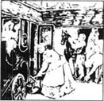
杰利·巴克尔是个小个儿男人，但他结实、健壮、动作敏捷。他住在伦敦，是个赶出租马车的。杰利的妻子波莉身材小巧，有一头光滑的黑发和一双乌黑的眼睛。他儿子叫哈利，快12岁了，个子高高的，脾气挺好。女儿多莉8岁，看上去和妈妈很像。
杰利有自己的一辆马车和两匹马，他自己赶马、料理马。他的另外一匹马高大洁白，名叫上尉。第二天上午，波莉和多莉来看我。哈利从那天一大早就帮父亲干活儿，已断定我是匹好马。波莉给我带来一片苹果，多莉给我拿了些面包。
“我们叫他杰克吧，和上回那匹一样，”杰利说，“好吗，波莉？”
“好，”她说，“我喜欢沿用一个好名字。”
上尉整个上午都出去拉车，我则是下午当班。杰利非常注意我的轭具和笼头是否舒服——而且也没有绳套儿啦！
我们去了车站，那儿有其他的马车在等候旅客，我们站在了最后一辆车的后面。几个马车夫过来看我。
“太俊了，”一个说，“有一天早上醒来你会发现他有毛病。”
一个穿灰上衣、戴灰帽的男人走上前来。他叫格兰特，看上去是那种快活、聪明的人。他在车站的时间比其他人都长，所以大家都让开道让他过来看看我，等着听他的意见。
他非常仔细地打量了我，然后说：
“他正适合你，杰利。不管你付了多少钱，他都值。”
我拉车的第一个星期很辛苦。我不习惯伦敦——噪音、匆忙、拥挤的马匹和车辆。但是杰利是个好车夫，很快就发现我愿意工作并且不偷懒。他对我从不用鞭子。很快我们就彼此理解了，那是一匹马和一个人之间所能达到的最深的理解。杰利总把我们收拾得干干净净，还给我们足够的食物和清水，星期日我们还休息。
我从没见过比我的新主人更好的人。他善良、脾气好，就像约翰·曼利。哈利对马厩的活儿很精通，总是在卖力地做。波莉和多莉早上来把马车刷干净、擦玻璃，同时杰利给我和上尉刷洗。这一家大小之间总是笑声不断，乐趣盎然，这一切使我和上尉也很快活。
这一家子早上总是来得很早，因为杰利不喜欢迟到。杰利经常为那些自己晚了，光会催他快赶车的人生气。
一天，两个野里野气的年轻人喊他。
“车夫，快点儿，我们赶维多利亚火车站一点钟的火车，快误点了。快送我们去。双倍付钱！”
“我只用正常速度送你们，先生们，”杰利说，“多付钱买不来超速度。”
拉利的车就在我们旁边，他打开门说：“我为你们效劳，先生们！我的马能保证把你们按时送到。”拉利把他们送进车，关门时，笑着看着杰利说：“他总是不愿意比小跑更快一点！”然后，他狠命抽打着他的马，飞快地跑走了。杰利拍着我的脖子说：“多付钱也买不来那种事，对吗，杰克？”
虽然他反对死命狂奔以取悦那些粗心大意的人，而总是按正常速度行驶，但是遇上理由正当时，他也不反对赶时间。
我记得一天早上，我们正站在车站等旅客，一个小伙子拎着一只大箱子从旁边走过。他踩在了路上的一片苹果上，重重地摔倒了。杰利跑过去帮助他站起来，然后扶他到一家店铺里坐下。
过了一会儿，那小伙子苍白、病弱地走出店铺叫杰利，我们走了过去。
“你能送我到东南火车站吗？”他说，“我跌了这一跤，要迟到了，事情很重要，我不能误12点的火车。如果你能及时送我过去，我会多付钱给你。”
“我们会尽力的，先生。”杰利说，并扶他上了车。
中午在城市中驾车是很难跑快的，街道上满是车辆。但是杰利和我已习惯了，没人能比我们更快了。在这样的街上，所有的车都以不同的速度向不同的方向行驶着，我们在车流中穿行，进进出出，出出进进，以一匹马能达到的最快速度向前跑。当我们到达车站时，大钟正指向差8分钟12点。
“我们及时到了！”小伙子高兴地说，“谢谢你，我的朋友，也谢谢你的好马。拿着，这是小费……”
“不，先生，”杰利说，“谢谢你，可是小费就不必了。我很高兴能及时赶到——现在快去赶你的火车吧。”
当我们回到车站时，其他人都在大笑，因为杰利刚才为追火车而拼命赶车了。
“他付了多少小费给你，杰利？”一个车夫说。
“一个子儿也没有。”杰利说，“他要给我小费，但是我没拿。如果杰克和我愿意时不时快跑一下，那也是我们的事，你们管不着。”
“你这样永远也成不了富翁。”拉利说。
“也许成不了，”杰利说，“但我会是个快乐的人！”
“而你呢，拉利，”格兰特先生加了一句，“会贫穷地死去，因为你花太多钱买新鞭子，把你可怜的马抽个半死——然后你就得再买一匹。”
“唉，我靠我的马从没走运过。”拉利说。
“你走不了运，”格兰特先生说，“好运挑选良伴，挑的常是那些善良、聪明的人。反正这是我的经验。”
他又转回身去看报纸了，其他人也回到了自己的车里。
* * *
冬天来得早，带着雪、雨和强劲的风，差不多连着几个星期都是如此。杰利有时去车站附近的一个咖啡店。有时多莉送来一些波莉给他做的热汤。
一个刮风的冷天，多莉正等着杰利喝汤，一个先生走了过来。杰利忙把汤碗递给多莉，正要揭我身上的盖布，那人说：“不，不，把汤喝完，我的朋友。我可以在车里等着你喝完。”杰利谢过他，回到多莉身旁。
“那是个真正的绅士，多莉，”他说，“他肯为一个可怜的赶车人的冷暖着想。”
杰利喝完了汤，我们就把那人拉到克莱范姆。后来他又坐了几次我们的车，常来拍拍我。有人这么注意一匹拉车的马可真少见。我对他心存感激。
又有一天，这位先生看见两匹马拉着一辆车站在街道上。车夫不在，我不知道他们已等了多久。不过，他们开始踱了几步。
突然，车夫从一栋楼里跑出来抓住了他们。他看上去很生气，狠狠地抽打起马，甚至抽打马头。
我们这位先生看见了他，就快步走过去。
“立刻住手，不然我喊警察了！”他说。
车夫醉了，他喊叫起来，不过他不再抽马了。同时，我们的先生抄下了在车身一侧的名字和地址。
“你干吗这样？”车夫喊道。
我们的先生没有回答。他走回我们的车。“很多人都感谢我，因为我告诉了他们，他们的马是被怎样使用的。”他对杰利说。
“我希望有更多的人像您，先生，”杰利说，“这座城市需要这样的人。”
11．Goodbye to old friends
11
Goodbye to old friends
One day we were waiting outside one of the London parks when a dirty old cab drove up beside ours. The horse was brown, with bones that showed through her coat. I was eating some hay and the wind took a little of it her way. The poor animal put out her long thin neck and picked it up, then turned and looked for more. There was a hopeless look in her dull eye and I wondered where I'd seen her before. Then she looked straight at me.
'Black Beauty, is that you?' she said.
It was Ginger! But how different she looked! Her face, which was once so full of life, was now miserable and full of pain, and her breathing was very bad.
I moved closer to her so that we could have a quiet talk, and it was a sad story that she told me. After twelve months' rest at Earlshall she was considered to be ready to work again, and was sold to a gentleman. She got on well for a little while, but after a long gallop one day, she became ill again. She was rested, was seen by a horse-doctor, then sold. In this way, she went from owner to owner several times, each one poorer than the one before.
'So at last I was bought by a man who keeps a number of cabs and horses, and hires them out,' said Ginger. 'You look happy and comfortable with life as a cab horse, and I'm glad, but it's different for me. They whip me and work me seven days a week. They say that they paid more for me than I was worth, and now they're trying to get their money back by working me until I drop.'
'You used to stand up and fight when people were cruel to you,' I said.
'Yes, I did once,' said Ginger. 'But men are stronger than we are, and if they're cruel and have no feelings, then there's nothing we can do about it. Oh, I wish the end would come. I wish I was dead.'
I was very sad. I put my nose against hers but could find nothing to say that would cheer her up. I think she was pleased to see me, because she said, 'You're the only friend I ever had.'
A few weeks after this, a cart with a dead horse in it passed by our cab stand. It was a brown horse with a long thin neck, and I believe it was Ginger. I hoped it was, because then her troubles would be over.
* * *
There was one day when we were very busy. First a fat gentleman with a large bag wanted to go to Bishopsgate Station; then we were called by a lady who wanted to be taken to Regent's Park; then a man jumped into the cab and called out, 'Bow Street Police Station, quick!'
After another journey or two, we came back to the cab stand and Jerry gave me some food, saying, 'We must eat when we can on days like this, Jack.' And he took out the meat and bread Polly had given him.
But neither of us had eaten many mouthfuls before a poor young woman came along the street. She was carrying a child and she looked lost and worried.
'Can you tell me the way to St Thomas's Hospital, please?' she asked. 'I have to take my little boy there, and I'm a stranger in London.' The little boy was crying as she spoke. 'He's in great pain and can't walk, but the doctor says that if I can get him to the hospital, then perhaps he'll get well again.'
'You can't carry him through the crowds,' said Jerry. 'It's five kilometres, and that child is heavy.'
'I'm strong,' said the woman. 'I think I can manage, if I know the way.'
'You can't do it. Just get into this cab and I'll drive you there. Don't you see that it's beginning to rain?'
'No, sir, I can't do that,' she said. 'I've only just enough money to get me home again.'
'Listen,' said Jerry. 'I've got a wife and children at home, and I'd be ashamed of myself if I let a woman and a sick child put themselves in danger. Get in the cab and I'll take you for nothing.'
'Oh, how kind you are!' said the woman, and began to cry.
Jerry opened the door but two men ran up, calling out, 'Cab!'
'It's taken,' said Jerry, but one man pushed past the woman and jumped in, followed by the other. 'This cab is already taken, gentlemen,' Jerry said again, 'by this lady.'
'Lady!' said one of the men unpleasantly, looking at the woman's poor clothes. 'She can wait. Our business is very important, and anyway, we were in first, and we'll stay in.'
A smile came over Jerry's face as he shut the cab door. 'Stay in as long as you like, gentlemen. I can wait while you rest yourselves.' He walked over to the young woman who was standing nearby. 'They'll soon be gone, don't worry,' he said, laughing.
And he was right. When the two men realized that they were going to have a very long wait, they got out, calling Jerry all kinds of bad names. After this, we were soon on our way to the hospital.
'Thank you a thousand times,' said the young woman, as Jerry helped her out of the cab.
'I hope your child will soon be better,' said Jerry. He watched her go in, then patted my neck. It was something he always did when he was pleased.
The rain was now coming down fast and, just as we were leaving the hospital, a lady came down the steps calling, 'Cab!' Jerry seemed to know her at once.
'Jerry Barker, is it you?' said the woman. 'I'm very glad to find you here. It's difficult to get a cab in this part of London today.'
'I'll be proud to take you,' said Jerry. 'Where do you want to go?'
'Paddington Station,' said the woman.
We got to the station and went in under cover. The lady stood beside the cab talking to Jerry for some time, and I discovered that she was once Polly's mistress.
'How do you like cab work in the winter?' she asked Jerry. 'Polly was worried about your cough last year.'
'She worries because I work all hours and in all kinds of weather,' said Jerry. 'But I get on all right, and I would be lost without horses to look after.'
'It would be wrong to harm your health in this work when you have a wife and two children,' said the lady. 'There are many places where good drivers or grooms are wanted. If you ever decide to give up cab work, let me know.' She put something into his hand. 'There's some money for the children.'
Jerry thanked her and, after leaving the station, we went home.
* * *
Christmas and the New Year are no holidays for cab drivers and their horses. People go to parties and dances, and the work is often late. Sometimes driver and horse have to wait for hours, shaking with cold.
We had a lot of late work during Christmas week and Jerry's cough was bad. On New Year's Eve we took two gentlemen to a house in the West End, and were told to come for them at eleven o'clock. 'You may have to wait a few minutes, but don't be late,' one of them said.
Jerry arrived at the right time and we waited. The wind was very cold and it was snowing. Jerry pulled one of my cloths higher over my neck, then walked up and down, trying to keep warm.
At half-past twelve, Jerry rang the door-bell and asked if the gentlemen still wanted the cab. The man at the door said, 'Oh, yes, you'll be wanted.'
At one o'clock the door opened and two men came out. They got in the cab without a word, and told Jerry where to drive. It was three kilometres away, and when the men got out they didn't say they were sorry for the long wait, but they were angry when Jerry made them pay for the extra waiting time. But it was money hard-earned.
When we got home, Jerry could not speak, and his cough was terrible, but he groomed me and made sure that I was warm and comfortable.
It was late the next morning before anyone came, and then it was only Harry. He cleaned us and gave us our food but was very quiet. Later that morning he came again, and this time Dolly came with him. She was crying, and I discovered from their conversation that Jerry was dangerously ill.
Two days passed, and only Harry and Dolly came to the stable. On the third day, Mr Grant from the cab stand arrived when Harry was in the stable. 'I won't go to the house, boy, but how is your father?' he said.
'He's very bad,' said Harry.
'I'm sorry to hear that,' said Mr Grant. 'He's the best man I know.'
But when he came the next day, Harry was able to tell him, 'Father is better today. Mother hopes he will get over it soon.'
'Thank God!' said Mr Grant. He was a kind man, and did a lot to help the family during this time, because while Jerry was ill, he was earning no money, and we all had to eat.
Jerry got slowly better, but the doctor said he must never do cab work again. The children talked a lot about what their mother and father would do, but a few days later Dolly ran into the stable to find Harry.
'There's a letter from Mrs Fowler, mother's old mistress!' said Dolly. 'She wants father to be her carriage driver, and we're going to live in a cottage in the country—with chickens and apple trees, and everything!'
This was bad news for me. I was not young now, and could not hope for a better master than Jerry, although Mr Grant promised to find a comfortable place for me.
I never saw Jerry again and was very sorry to leave.
hopeless adj. without hope 绝望的，无望的。
dull adj. (color, light, etc.) not bright 暗淡的。
cheer sb. up make sb. happier 使某人高兴起来。
mouthful n. a quantity as much as can be put into the mouth comfortably at one time 一口的量。
manage v. succeed, contrive 完成；设法办到。
ashamed adj. embarrassed by shame 羞耻的。
anyway adv. in any case 无论如何。
cover n. hiding-place, shelter 躲藏之处，躲避之处。
earn v. get in return for work 赚钱；挣。
cottage n. small house in the countryside 村舍；乡舍。
11 告别老友
11 告别老友
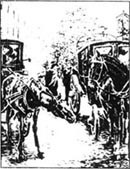
一天我们在伦敦的一个公园门外等客，一辆又脏又旧的车从我们身旁经过。那马是棕色的，瘦骨嶙峋。我正在吃草，风把几根草刮到她那边。可怜的家伙伸着她又瘦又长的脖子把草叼了起来，又转过头来找别的草吃。在她黯淡的眼睛中有一股绝望的神情，我寻思自己以前在哪儿见过它。她也定定地看着我。
“黑骏马，是你吗？”她说。
是金儿！可她变化多大呀！她的脸，曾经是那么有生气的一张脸，现在悲惨而痛楚，她的呼吸也非常不好。
我凑近它，这样我们可以小声交谈。她给我讲了一个悲伤的故事。在沙尔伯爵庄园休养了一年后，主人认为她又能干活了，就把她卖给了一位先生。她开始还好，但是有一天经过长时间奔跑后，她又病了。她停止工作，看了医生，又被卖掉了。这样，她被从这个人卖到那个人，一个不如一个。
“最后我被一个有好多辆车和马供出租的人买下了，”金儿说，“看样子你拉车也挺高兴、挺舒服，我也为你高兴，可生活对我就不同了。他们抽打我，让我一周工作7天。他们说买我不值，现在他们要我拼命工作，帮他们把钱挣回来，直到我倒下。”
“你以前对残酷的人都是奋起斗争的呀！”我说。
“是的，我曾经这样做过。”金儿说，“可是人比我们强大，如果他们残暴无情的话，我们就没办法了。哦，我希望死期快点来。真希望我已经死了。”
我非常难过。我把鼻子贴着她的鼻子，可不知道说什么才能让她振作起来。我想她见到我很高兴，因为她说：“你是我曾有过的唯一的朋友。”
几个星期以后，一辆拉着一匹死马的车从我们的车站旁经过。那是一匹棕色的马，有着又瘦又长的脖子，我相信那是金儿。我希望如此，因为那样她的一切苦难就都结束了。
* * *
有一天我们非常忙。先是一个带大包的胖先生想去比少普盖特火车站；然后一位太太要我们拉她去雷根特公园；再后是一个人跳上车喊道：“波街警察局。快点！”
又跑了一两趟后，我们回到车站，杰利喂了我一些食物，说：“当我们这样工作时，我们必须得抽空就吃东西，杰克。”说着他掏出波莉给他的肉和面包来吃。
我们俩都还没吃上几口，一个可怜的年轻女人就沿街道走过来了。她抱着一个小孩，看上去不知所措，忧心忡忡。
“您能告诉我去圣托马斯医院怎么走吗？”她问，“我得带我的儿子去医院，我是外地人。”小男孩在她说话时一直哭闹着，“他疼得连路都走不了，大夫说如果把他送到医院，也许他会好起来的。”
“你没法儿抱着他穿过这么挤的人群，”杰利说，“医院有5公里远，再说孩子又重。”
“我有力气，”女人说，“我觉得我能走到，只要知道路怎么走。”
“你没法儿自己去。上车吧，我送你去。你没看到开始下雨了吗？”
“不，先生，我不能坐您的车，”她说，“我只剩下回家的钱了。”
“听我说，”杰利说，“我家里有老婆孩子，如果我眼看着一个妇女和她生病的孩子处于危险之中而不顾，我会感到非常羞耻的。上车吧，我免费送你们。”
“噢，您太好了！”妇女说着，哭了起来。
杰利打开车门，这当儿两个男人跑了过来，喊着：“马车！”
“已经有人要了！”杰利说，可是一个男人冲到妇女前面跳上了车，另一个也跳了上来。“这车已经有人要了，先生们。”杰利又说了一遍，“这位女士要了。”
“女士！”其中一个男人不高兴地说，一边看着妇女那破旧的衣服。“她可以等，我们的事情非常重要，再说，是我们先上的车，我们就在车上呆着。”
杰利听罢，脸上掠过一丝微笑，他关上车门说：“爱呆多久呆多久吧！先生们。在里面歇着好了。我等着你们。”然后他向站在旁边的年轻妇女走过去。“他们很快就会走的，别担心！”他说着，笑起来。
他说对了。那两个男人意识到他们面临着漫长的等待，就用各种难听的话骂着杰利，钻出车门。然后很快我们就向医院赶去。
“非常非常感谢您。”杰利把她扶出车时年轻女人说道。
“我希望你的孩子能很快恢复健康。”杰利说。他看着她进了医院，然后拍了拍我的脖子。当他遇上高兴事儿时，他总爱这么做。
当时雨下得正大，正当我们要离开医院时，一个女士走下台阶，叫道：“马车！”杰利似乎马上认出了她。
“杰利·巴克尔，是你吗？”她说，“真高兴在这儿遇到你。今天在这一带很难叫到车。”
“能拉您我很荣幸！”杰利说，“您要去哪儿？”
“帕丁顿车站。”女士说。
我们到了车站，进入能避雨的地方。女士站在车旁和杰利说了一会儿话。我发现她曾是波莉的女主人。
“冬天赶车怎么样？”她问杰利，“波莉去年很担心你的咳嗽病。”
“她担心是因为我得在各种气候条件下长时间工作。”杰利说，“不过我适应得不错。再说要是不照顾马，我会很失落的。”
“可是你有妻子和两个孩子，把你的健康耗费在这项工作上是错误的，”女士说，“还有很多地方需要好车夫、好马夫。什么时候你打算不再干这活儿了，就告诉我。”她往他手里放了点儿东西，“这是给孩子们的钱。”
杰利谢了她，然后我们就离开车站回家了。
* * *
对于马夫和他们的马来说，圣诞节和新年是不算休息日的。人们去聚会、跳舞，我们的活儿都比较晚。有时车夫和马匹不得不等上几个小时，冻得发抖。
圣诞节那一周，我们有很多晚活儿。杰利的咳嗽加剧了。新年前夜，我们把两位先生送到西区一座房子，他们叫我们11点来接。“你们可能得等上几分钟，可是不能迟到。”他们中的一个说。
杰利正点到达，我们等着。风很冷，又下着雪。杰利把我身上的一块盖布拉高罩住我的脖子，他自己则走来走去，试图保持温暖。
12点半了，杰利按门铃问那两位先生是否还想要车。门房答道：“噢，是的，他们还会需要你。”
1点了，门开了，两个男人走了出来。他们坐进车里，什么也没说，只告诉杰利到哪儿去。路有3公里远，到下车时他们也没有为让我们等了这么长时间而说句抱歉的话，反而因为杰利让他们付超时等候费而生了气。我们挣的真是辛苦钱。
我们回到家时，杰利连话也说不出来了，他咳得厉害极了，但他还是给我刷洗了一遍，以确保我温暖、舒适。
第二天早上到很晚还没有人来马厩，最后只有哈利来了。他把我们收拾了一遍，又喂了我们些吃的，却一言不发。上午晚些时候他又来了一趟，这回多莉也一起来了。她哭着，从他们的交谈中，我发觉杰利病情很危险。
两天过去了，只有哈利和多莉来马厩。第三天，车站的格兰特先生来了，哈利正站在马厩里。“我不进屋了，孩子，你父亲怎么样了？”他问。
“他糟透了。”哈利说。
“我真难过，”格兰特先生说，“他是我所认识的最好的人。”
不过第二天当他来时，哈利已能告诉他说：“爸爸今天好点了，妈妈希望他的病很快能好。”
“感谢上帝！”格兰特先生说。他是个善良的人，而且在这期间帮了这家人很多忙，因为杰利病了，就没法挣钱，可我们都得吃饭。
杰利慢慢地好起来了，可医生要他再也别干这行了。孩子们经常讨论爸爸妈妈将要做什么，几天后多莉跑进马厩找哈利。
“妈妈以前的女主人弗乐太太来了一封信！”多莉说，“她要爸爸做她的车夫，我们将住在乡村小屋里，有小鸡、苹果树，和一切！”
对我来说，这可不是好消息。我现在不再年轻了，也不可能遇上比杰利更好的主人了，尽管格兰特先生保证他会为我找一个好主儿。
我再也没有见到过杰利，离开他我非常难过。
12．Hard times
12
Hard times
I was sold to a baker who Jerry knew, but the baker's cart driver was a man called Jakes, who drove with the bearing rein up. This made it difficult for me to pull a heavy cart, and I found the work very hard.
One day, after three or four months of this, I was pulling the cart, which was much heavier than usual, up a steep hill. I had to stop several times to rest, which didn't please Jakes.
'Move on, you lazy horse, or I'll make you!' he shouted, and he hit me with his whip.
After a few more metres, I had to stop again. The whip came down across my back once more and the pain was sharp. I was doing my best but the driver was still punishing me cruelly, which seemed very unfair.
Jakes was whipping me a third time when a woman hurried over and said, 'Oh, please don't whip your horse like that. I think I can help, if you'll let me.'
Jakes laughed. 'Oh?'
'He can't use all his strength when his head is held back with that bearing rein,' the woman went on. 'If you take it off, I'm sure he'll do better.'
'Anything to please a lady,' said Jakes, smiling.
The rein was taken off and I moved my head up and down several times to help my aching neck.
'Poor boy, is that what you wanted?' said the woman, patting me. She turned to Jakes. 'If you speak to him kindly and lead him on, I believe he'll do better.'
Jakes took the rein, and I put down my head and moved on. I pulled the cart up the hill, then stopped to take a breath.
'Well, that helped,' said Jakes, 'but if I went without a bearing rein all the time, the other cart drivers would laugh at me. It's fashionable, you see.'
'It's better to start a good fashion than to follow a bad one,' said the woman. 'Many gentlemen don't use bearing reins now.'
She gave me another pat on the neck and walked on.
After that, Jakes always took off my bearing rein when I was going up a hill, and that made my life easier. But pulling heavy carts day after day slowly began to exhaust me and a younger horse was brought in to do my work.
* * *
I was sold to another cab owner whose name was Nicholas Skinner. He was hard on his drivers, and they were hard on the horses. We worked long hours, had no Sunday rest, and it was a hot summer.
My driver was just as hard as his master, and he had a cruel whip with something sharp at the end which often cut me and made me bleed. It was a terrible life, and sometimes, like poor Ginger, I wished I was dead.
One day I nearly got my wish.
We were at the railway station when a family of four people hired us. There was a noisy man with a lady, a little boy, a young girl, and a lot of heavy luggage.
'Father,' said the young girl, 'this poor horse can't take us and all our luggage. He's too tired.'
'Oh, he's all right, miss!' said my driver. He put a heavy box on the cab with the other luggage.
'Father, please take a second cab,' said the girl. 'I'm sure this is very cruel.'
'Grace, get in at once, and don't be stupid,' said her father. 'The driver knows his own business.'
My gentle friend had to obey, and box after box was lifted up and put on the top of the cab, or next to the driver. Then the driver hit me with his whip and we moved out of the station.
The cab was very heavy and I had not eaten or rested since early that morning. I did my best and got along quite well until we came to Ludgate Hill. By then I was exhausted, and the heavy cab was too much for me. My feet went from under me and I fell heavily, knocking all the breath out of me. I lay quite still because I could not move. Indeed, I expected to die.
There were angry voices above me and luggage was taken off the cab, but it was all like a dream. I thought I heard the girl's voice saying, 'Oh, that poor horse! It's all our fault!'
Someone loosened my bridle and collar, and another voice said, 'He's dead, he'll never get up again.' I heard a policeman giving orders but I did not open my eyes. Cold water was thrown over my head, some medicine was put into my mouth, and I was covered with a cloth.
I don't know how long I was there, but a man with a kind voice persuaded me to try to get up—and I managed it. Then I was gently led to some stables close by.
That evening, I was taken back to Skinner's stables, and the next morning the horse-doctor came to see me.
'He's been worked too hard,' said the doctor. 'There's no strength left in him.'
'Then he must go for dog food,' said Skinner. 'I have no fields for sick horses. It doesn't suit my business. I work them for as long as they'll go, then I sell them for what I can get.'
'There's a horse fair in ten days' time,' said the doctor. 'If you rest him and give him food, he may get better, and then you may get more than his skin's worth.'
Luckily for me, Skinner took the doctor's advice and, after rest and food, I began to feel better. Ten days later, I was taken to the horse fair, a few miles outside London.
punish v. cause suffering for wrong doing 惩罚。
strength n. energy 力气；力量。
bleed v. lose blood 流血。
luggage n. bags, trunks, etc. taken on a journey 行李。
loosen v. make loose 放松。
fair n. periodical gathering for sale of goods, often with shows, at place and time fixed by custom 定期集市。
12 苦日子
12 苦日子
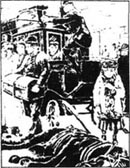
我被卖给了杰利认识的一位面包师。这面包师的车夫是个叫贾克的男人。他喜欢把绳套收得紧紧的。这叫我拉重物时很困难。我发现这工作很不好干。
这样过了三四个月。一天，我正拉车上一个很陡的小山。这次车比以往都沉重得多。我不得不几次停下来休息，这让贾克很不高兴。
“走啊，你这懒马！我要抽你了！”他喊着并用鞭子抽我。
拉了几米，我又得停下来。鞭子又落在我的后背上，疼得钻心。我已经尽力了，可车夫还无情地惩罚我，这非常不公平。
贾克第三次抽我的时候，一位妇女跑过来说：“噢，请你别那样抽你的马。我想我能帮忙，如果你愿意的话。”
贾克笑起来，“噢？”
“他的头被绳套向后拉得抬起来，这样他就使不上力气，”妇女接下去说，“如果你卸下绳套，我肯定他能干好。”
“只要能让女士开心，我什么事都可以干！”贾克笑着说。
绳套拆了下来，我上下活动了几次酸疼的脖子。
“可怜的孩子，你就想这样吧？”女人说着拍拍我。她转向贾克，“只要对他说几句好话，并牵着它，我相信他会干得更好。”
贾克拾起缰绳，我低下头拉起来。我把车拉上了山顶，停下来喘着气。
“咦，倒是管用，”贾克说，“可是如果我一直不用绳套，其他车夫会笑我的。这是潮流，你知道吧。”
“开始一个好潮流比追随一个坏潮流强。”妇女说，“现在很多绅士已不再用绳套了。”
她又拍了拍我的脖子，然后走了。
从那以后，贾克在我上山时就摘下绳套，这让我的日子好过了一些。但是日复一日地拉重车慢慢耗尽了我的体力，一匹年轻的马被带来接替我。
* * *
我被卖给了另一个叫尼古拉斯·斯基耐尔的出租马车车主。他对车夫很冷酷，车夫就把气撒在马身上。我们长时间地工作，星期天也不能休息。当时又是炎热的夏天。
我的车夫和他的主人一样冷酷，他的鞭子梢上有什么锐利的东西，经常使我受伤流血。生活真是可怕，有时，我就像可怜的金儿，巴不得自己死掉。
有一天，这个愿望差点儿就实现了。
当时我们在火车站，有一家四口来叫车。这一家有一个吵吵嚷嚷的男人和一位女士、一个小男孩和一个小女孩，还有很多沉重的行李。
“爸爸，”小女孩说，“这匹可怜的马拉不了我们和我们的行李，他太累了。”
“哦，他没问题，小姐！”我的车夫说。他把一个重箱子放到车上，和其他行李放在一起。
“爸爸，坐别的车吧，”小女孩说，“我觉得这太残酷了。”
“格蕾丝，赶快上车，别犯傻了，”她爸爸说，“车夫自己知道。”
我温柔的朋友只好遵从，一个又一个箱子被举起放到车顶上，或是车夫旁。然后车夫抽了我一鞭子，我们走出了车站。
车子很沉。我从清早起就没吃过东西，也没休息过。我尽力在拉，直到鲁德盖特山，我都做得很好。到了那儿我已精疲力尽了，车子实在是太重了。我的脚在身子下面绊了一下，便重重地跌倒了，气都喘不上来了。我静静地躺在地上动弹不得。真的，我希望死掉。
我头顶上响起愤怒的声音，行李被从车上卸下来，这一切都像是个梦。我好像听到那女孩的声音在说：“噢，可怜的马，这全是我们的错！”
有人解下了我的笼头和轭具，另一个声音说：“他死了，再也站不起来了。”我听见一个警察在下命令，可我没有睁开眼睛。冷水浇在我的头上，药喂进我嘴里，一块布盖到了我的身上。
我不知道在那儿躺了多久，后来一个男人和善的声音劝我试着站起来——我做到了。随后我被轻轻地牵到附近的一个马厩。
那天晚上，我被带回斯基耐尔的马厩。第二天一早兽医来看我。
“他干活过于劳累，”医生说，“已经没体力了。”
“那他只有去喂狗了，”斯基耐尔说，“我可没地方养这些病马。这对我的生意不利。我得尽可能地使用他们，然后卖掉，能得一点是一点。”
“10天后有一个马市，”医生说，“如果让他休息一下，再喂些吃的，他会好起来，你也能卖个比马皮好点儿的价钱。”
真幸运，斯基耐尔听从了医生的建议。靠着休息和食物，我开始觉得好一点了。10天后，我被带到伦敦外几英里的马市。
13．My last home
13
My last home
I was sold to a farmer at the horse fair, but it was his young grandson who persuaded him to buy me.
The two of them walked past me and, seeing kindness in the farmer's face, I lifted my head, put my ears forward and tried to look my best.
The farmer stopped and looked at me. 'There's a horse, Willie, that has known better days,' he said.
'Poor thing!' said the boy. 'Do you think he was ever a carriage horse, grandfather?'
'Oh, yes,' said the farmer. 'Look at his fine head and the shape of his neck and shoulder.' He reached out a hand and patted me on the neck. I put out my nose in answer to his kindness, and the boy gently put his hand against my face.
'Look how well he understands kindness,' said the boy. 'Won't you buy him, and make him young and strong again?'
The man who was selling me said, 'The boy can recognize a good horse, sir. This one isn't old, just tired and thin from too much work. In six months, he'll be fine.'
Five pounds changed hands and, soon after, I was taken to my new home. The farmer gave orders for me to have hay and oats every night and morning, and I was let out into a large field in the daytime. Willie, the young boy, was responsible for me, and he came to see me every day, bringing carrots or apples.
During that winter, the rest, the good food, the soft grass and gentle running and trotting all helped to make me feel quite young again. When the spring came, the farmer tried me with a carriage, and I did the work quite easily.
'He's growing young, Willie,' he said. 'We'll give him some gentle work and look for a good home for him.'
* * *
One day during this summer, the groom cleaned and dressed me with special care, and Willie seemed half-worried and half-excited as he got into the carriage with his grandfather.
'I hope the ladies like him,' said the farmer.
A kilometre or two beyond the village, we came to a pretty house, and Willie went to knock on the door. He asked if Miss Blomefield and Miss Ellen were at home. They were, and Willie stayed with me while the farmer went into the house. He came back about ten minutes later with three ladies. They seemed to like me, but one of them, worried by my knees, wondered if I was safe.
'It's true his knees were broken once,' said the farmer, 'but we don't know why he fell. It was probably a careless driver, and not the horse's fault at all. He seems very safe to me. If you like him, you can try him for a few weeks,' he went on. 'Then your driver will see what he thinks of him.'
One of the three ladies—a tall, white-faced lady, who held the arm of a younger woman—said, 'You have always given us good advice about our horses, so we accept your offer to try him.'
The next morning, a young man came for me. He looked pleased until he saw my knees, then he said, 'I'm surprised you suggested this horse to my ladies.'
'You're only taking him to try him,' said the farmer. 'If he's not as safe as any horse you ever drove, send him back, young man.'
I was taken to a comfortable stable, given some food, then left to myself.
The next day, the groom was cleaning my face when he said, 'That's just like the star that Black Beauty had on his forehead. I wonder where he is now.' He looked more closely at me. 'White star on the forehead, one white foot—and a little white place on his back! It must be Black Beauty! Beauty! Do you know me? I'm little Joe Green, who almost killed you!' And he began patting me all over my back.
I could not say I remembered him, as he was now a fine young man with a black moustache and a deep voice. But I was sure he knew me, and that he was Joe Green, and I was very glad. I put my nose up to him and tried to say that we were friends. I never saw a man so pleased.
That afternoon, I was harnessed to a carriage for Miss Ellen to try me. Joe Green went with her and told her that he was sure I was Mr Gordon's old Black Beauty.
'I shall write to Mrs Gordon and tell her that her favourite horse has come to us,' said Miss Ellen. 'How pleased she will be!'
I have now lived in this happy place a whole year. Joe is the best and kindest of grooms. My work is easy and pleasant, and I feel my strength coming back again.
The ladies have promised that they will never sell me, and so I have nothing to fear; and here my story ends. My troubles are all over, and I am at home; and often, before I am quite awake, I dream I am still in the field at Birtwick, standing with my old friends under the apple trees.
shape n. outer form, outline 外形；样子；形状。
responsible adj. morally or legally liable for carrying out a duty 道义上负有责任。
carrot n. 胡萝卜。
beyond prep. on the farther side of... 在……的那一边。
accept v. receive 接受。
moustache n. hair growing on the upper lip 髭；嘴上胡子。
be awake arouse from sleep 醒来。
13 我最后的家
13 我最后的家
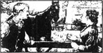
我在马市上被卖给了一个农夫，不过是他的小孙子说服他买我的。
他们两个从我身边走过。看到农夫脸上的善意，我抬起头，把耳朵竖起来，尽量使自己看上去好看一点。
农夫停下脚看着我。“这儿有一匹马，威利，他有过好日子，”他说。
“可怜的马！”男孩说，“你是说他曾是一匹拉马车的马吗，爷爷？”
“哦，是啊，”农夫说，“看他优美的头部和他脖子、肩膀的线条。”他伸手拍拍我的脖子。我伸过鼻子回应他的好意，男孩把他的手轻轻地放在我的脸上。
“看他多能理解别人的好意，”男孩说，“你为什么不买了他，让他重新年轻、强壮起来呢？”
卖我的人开口了：“这孩子识货，先生。这马不老，只是干活太多，才这么又累又瘦。6个月后他就会好的。”
5英镑过了手，很快我就被带回了新的家。农夫让我每天早晚吃草和燕麦，白天准我出去到大片田野中。威利，那男孩子，对我很负责。他每天来看我，给我带来胡萝卜或苹果。
冬天里，休息和良好的食物，柔软的草和轻快的小跑都令我重新感到年轻。春天来到的时候，农夫试着让我拉车，我干得相当轻松。
“他越来越年轻了，威利，”他说，“我们会给他些轻活儿干干，再为他找个好去处。”
* * *
夏季里的一天，马夫仔细地给我清洗过，又给我打扮了，威利看上去半喜半忧，和爷爷一起坐进马车。
“我希望小姐们喜欢他。”农夫说。
出村一两公里，我们来到了一栋美丽的房子前面，威利上前去敲门。他问布劳姆菲尔德小姐和爱伦小姐是否在家。她们在，农夫就进了屋子，威利则和我呆在一起。10分钟后农夫回来了，还带着3位小姐。她们看上去很喜欢我，可其中的一个有些担心我的膝盖，拿不准我是否安全。
“他的膝盖确实摔坏过一次，”农夫说，“我们也不知道他是怎么摔的。可能是个粗心的车夫，而根本不是这马的过错。在我看来，他非常安全。如果你们喜欢他，可以试几个星期，”他继续道，“那样你们的车夫就能知道他怎么样了。”
3位小姐之一——一位高高的、脸色白白的小姐——挽着另一位小姐的胳膊说：“你以往总是对我们的马提出好建议，所以我们就接受你的提议试试他吧。”
第二天一早，一个年轻人来了。他看上去很愉快，但看到我的膝盖时，他不太高兴，说：“我真惊讶你推荐这匹马给我的小姐们。”
“你就试试他好了，”农夫说，“如果他不如你驾驭过的其他马安全，就退给我，年轻人。”
我被带到了一个舒适的马厩，吃了点儿东西，然后就自己呆着。
第二天，马夫给我洗着脸，说：“他前额上的星记真像黑骏马。也不知他现在在哪儿。”他更仔细地看看我，“前额上的白星，一只白蹄——背上的一小块儿白！一定是黑骏马！黑骏马！你还认识我吗？我是小乔·格林，差点儿让你送命的那个！”他开始拍我的后背。
我没法儿说我想起了他，因为他现在是个有着黑胡子和深沉嗓音的英俊的小伙子啦。但我肯定他认识我，那么他就是乔·格林。我非常高兴。我向他抬起鼻子，想说我们是朋友。我还没见过有谁这么高兴过。
那天下午，我被套上车，让爱伦小姐试试我。乔·格林和她一起去并告诉她他肯定我是高顿先生以前的黑骏马。
“我要写信给高顿夫人，说她心爱的黑骏马来到了我们身边，”爱伦小姐说，“她会多么高兴啊！”
我现在已经在这个快乐的地方生活了整整一年。乔是最好最善良的马夫。我的工作轻松愉快，我觉得我的力气又回来了。
小姐们保证她们永远也不会卖掉我，所以我什么也不用怕了；我的故事也就此打住。那些麻烦都过去了，我现在是在家里。经常地，在我的睡梦中，我梦见自己还在伯特威克的田野中，和我的老朋友们一起站在苹果树下。
Exercises
Exercises
A Checking your understanding
Chapters 1-3 Write answers to these questions.
1 What happened when Black Beauty was two years old?
2 What part of his training did Black Beauty find very useful?
3 What is a 'loose box'?
4 Why were the children afraid to come into the stable?
5 What happened on fine Sundays in summer, and why?
6 What had Ginger decided before she came to Birtwick Park?
Chapters 4-6 Who said this, and what were they talking about?
1 'They never think that we get tired.'
2 'At that time, some owners thought it was fashionable.'
3 'He's not supposed to turn in through your gates.'
4 'Black Beauty was cleverer than we were.'
5 'Take this horse, somebody, while I go back for the other!'
Chapters 7-9 Who or what in these chapters...
1 ...did Joe do wrong after Black Beauty's ride for the doctor?
2 ...did Lady Gray want York to do to her carriage horses?
3 ...jumped a wide ditch and fell with Lady Anne?
4 ...was Reuben Smith too drunk to notice on the ride home?
5 ...stole the oats which were meant for Black Beauty?
Chapters 10-13 Are these sentences true (T) or false (F)?
1 Jerry used the whip a lot and did not understand Black Beauty.
2 Jerry always did exactly what his passengers wanted.
3 Black Beauty hoped that the dead horse in the cart was Ginger.
4 Jerry had to stop doing cab work because of his health.
5 Black Beauty's next two owners were kind to their horses.
6 Black Beauty was sold to a farmer at a horse fair for ten pounds.
7 Joe Green recognized the star on Black Beauty's forehead.
B Working with language
1 Put this summary of Chapter 5 in the right order.
1 so we had to go back and take a longer road to the river.
2 Just then a man ran up on the other side of the river,
3 John tried to lead me forward, but I still would not go.
4 One autumn day my master had to go to a distant town.
5 shouting that the bridge was broken in the middle.
6 On the way home the storm blew a tree down across the road,
7 because I knew that something was wrong.
8 There had been a lot of rain, and the river was very high.
9 When we came to the bridge, I would not go on to it,
2 Complete these sentences with information from the story.
1 Ginger had a bad habit of biting people because...
2 When Black Beauty became very ill, Joe Green...
3 Although Mr Barry ordered the best oats, ...
4 The woman with the sick child could not pay for a cab, so...
5 Jerry was told to go to the West End at eleven o'clock, but...
C Activities
1 Who is your favourite, and your least favourite character in this story? Why? Write a few sentences about each of them.
2 Imagine you are James. Write a letter to your mother, telling her all about the night of the fire, and how you saved the horses.
3 At the time of this story horses were very useful and important animals. How are horses' lives different now, in your own country and in other countries? Do you think people are still cruel to horses? Write a short report to answer these questions.
4 Imagine you are a horse (or, if you prefer, some other animal) in today's world, and write about a day in your life.
封底
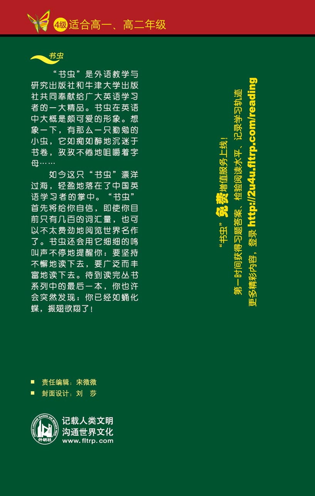